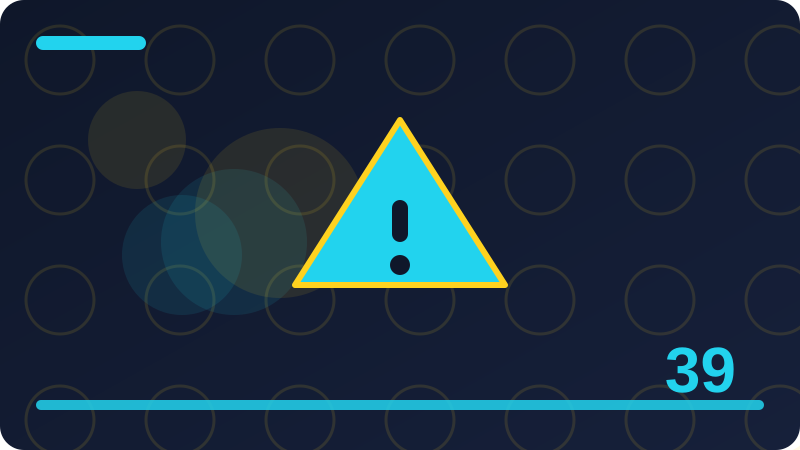

Chapter 39: Testing, Debugging and Logging

Section 1
This section is about Why testing matters for every program. It matters because it is one of the building blocks you will meet again and again when you work with this chapter's topic in a real program, and understanding it properly now will save you from guessing later. By the end of this section you should be able to explain Why testing matters for every program in your own words, recognise it when you see it in someone else's code or data, and use it in a small example of your own without copying a solution blindly. That is a modest goal, but it is the right goal for a beginner: first clarity, then speed. Many learners rush past a topic like this one, assuming it is obvious, and then lose time later when a small detail behaves differently from what they expected. Taking the time to work through Why testing matters for every program carefully, with a concrete example in front of you, is therefore not slow progress at all; it is the fastest reliable way to build skill that lasts.
To understand Why testing matters for every program, start by breaking it into small steps rather than trying to hold the whole idea in your head at once. First, name exactly what is involved: what goes in, what comes out, and what should stay unchanged. Second, look at a simple case where everything works, and trace what happens from beginning to end. Third, change one thing at a time and watch how the result changes, because that controlled change is what turns a vague impression into real understanding. Fourth, ask what could go wrong, and what a careful programmer would check before trusting the result. Working in this order, with Why testing matters for every program as your focus, keeps you from being overwhelmed by details that only matter in unusual cases. It also gives you a habit you can reuse for every new topic in this book: describe it simply, try a small case, vary one thing, and then check the edges.
Consider a concrete example involving a function that adds two numbers and returns the result. Imagine you are working with that example in a small program, and you need to apply Why testing matters for every program to it in a sensible way. Begin with the simplest version of the example that still shows the idea: a single item, a single value, or a single step, rather than a large collection. Write down what you expect to happen before you run anything, because a written expectation is what turns a run into a test. Then carry out the step, compare the result with your expectation, and note any difference, however small. If the result matches, try a slightly larger version of the same example, such as two or three items instead of one. If it does not match, resist the urge to rewrite everything; instead, check the simplest part first, then the next part, until the mismatch has a clear location.
#include <iostream>
#include <cassert>
int add(int a, int b) { return a + b; }
int main() { assert(add(2, 3) == 5); assert(add(0, 0) == 0); std::cout << "All checks passed\n"; return 0; }Check: In your own words, what does Why testing matters for every program mean, and what would you check first when using it in a small program?
Section 2
This section is about A first test: expected value compared with actual value. It matters because it is one of the building blocks you will meet again and again when you work with this chapter's topic in a real program, and understanding it properly now will save you from guessing later. By the end of this section you should be able to explain A first test: expected value compared with actual value in your own words, recognise it when you see it in someone else's code or data, and use it in a small example of your own without copying a solution blindly. That is a modest goal, but it is the right goal for a beginner: first clarity, then speed. Many learners rush past a topic like this one, assuming it is obvious, and then lose time later when a small detail behaves differently from what they expected. Taking the time to work through A first test: expected value compared with actual value carefully, with a concrete example in front of you, is therefore not slow progress at all; it is the fastest reliable way to build skill that lasts.
To understand A first test: expected value compared with actual value, start by breaking it into small steps rather than trying to hold the whole idea in your head at once. First, name exactly what is involved: what goes in, what comes out, and what should stay unchanged. Second, look at a simple case where everything works, and trace what happens from beginning to end. Third, change one thing at a time and watch how the result changes, because that controlled change is what turns a vague impression into real understanding. Fourth, ask what could go wrong, and what a careful programmer would check before trusting the result. Working in this order, with A first test: expected value compared with actual value as your focus, keeps you from being overwhelmed by details that only matter in unusual cases. It also gives you a habit you can reuse for every new topic in this book: describe it simply, try a small case, vary one thing, and then check the edges.
Consider a concrete example involving a function that checks whether a password is long enough. Imagine you are working with that example in a small program, and you need to apply A first test: expected value compared with actual value to it in a sensible way. Begin with the simplest version of the example that still shows the idea: a single item, a single value, or a single step, rather than a large collection. Write down what you expect to happen before you run anything, because a written expectation is what turns a run into a test. Then carry out the step, compare the result with your expectation, and note any difference, however small. If the result matches, try a slightly larger version of the same example, such as two or three items instead of one.
#include <iostream>
#include <string>
bool longEnough(const std::string& s) { return s.size() >= 8; }
int main() { std::cout << "empty: " << longEnough("") << "\n"; std::cout << "short: " << longEnough("abc") << "\n"; std::cout << "ok: " << longEnough("password") << "\n"; return 0; }Check: In your own words, what does A first test: expected value compared with actual value mean, and what would you check first when using it in a small program?
Section 3
This section is about Writing tests that you can run again and again. It matters because it is one of the building blocks you will meet again and again when you work with this chapter's topic in a real program, and understanding it properly now will save you from guessing later. By the end of this section you should be able to explain Writing tests that you can run again and again in your own words, recognise it when you see it in someone else's code or data, and use it in a small example of your own without copying a solution blindly. That is a modest goal, but it is the right goal for a beginner: first clarity, then speed. Many learners rush past a topic like this one, assuming it is obvious, and then lose time later when a small detail behaves differently from what they expected. Taking the time to work through Writing tests that you can run again and again carefully, with a concrete example in front of you, is therefore not slow progress at all; it is the fastest reliable way to build skill that lasts.
To understand Writing tests that you can run again and again, start by breaking it into small steps rather than trying to hold the whole idea in your head at once. First, name exactly what is involved: what goes in, what comes out, and what should stay unchanged. Second, look at a simple case where everything works, and trace what happens from beginning to end. Third, change one thing at a time and watch how the result changes, because that controlled change is what turns a vague impression into real understanding. Fourth, ask what could go wrong, and what a careful programmer would check before trusting the result. Working in this order, with Writing tests that you can run again and again as your focus, keeps you from being overwhelmed by details that only matter in unusual cases. It also gives you a habit you can reuse for every new topic in this book: describe it simply, try a small case, vary one thing, and then check the edges.
Consider a concrete example involving a function that finds the largest value in a list. Imagine you are working with that example in a small program, and you need to apply Writing tests that you can run again and again to it in a sensible way. Begin with the simplest version of the example that still shows the idea: a single item, a single value, or a single step, rather than a large collection. Write down what you expect to happen before you run anything, because a written expectation is what turns a run into a test. Then carry out the step, compare the result with your expectation, and note any difference, however small. If the result matches, try a slightly larger version of the same example, such as two or three items instead of one.
#include <iostream>
#include <vector>
#include <algorithm>
int largest(const std::vector<int>& v) { return *std::max_element(v.begin(), v.end()); }
int main() { std::cout << largest({3, 9, 4}) << "\n"; return 0; }Check: In your own words, what does Writing tests that you can run again and again mean, and what would you check first when using it in a small program?
Section 4
This section is about Unit tests for a single function. It matters because it is one of the building blocks you will meet again and again when you work with this chapter's topic in a real program, and understanding it properly now will save you from guessing later. By the end of this section you should be able to explain Unit tests for a single function in your own words, recognise it when you see it in someone else's code or data, and use it in a small example of your own without copying a solution blindly. That is a modest goal, but it is the right goal for a beginner: first clarity, then speed. Many learners rush past a topic like this one, assuming it is obvious, and then lose time later when a small detail behaves differently from what they expected. Taking the time to work through Unit tests for a single function carefully, with a concrete example in front of you, is therefore not slow progress at all; it is the fastest reliable way to build skill that lasts.
To understand Unit tests for a single function, start by breaking it into small steps rather than trying to hold the whole idea in your head at once. First, name exactly what is involved: what goes in, what comes out, and what should stay unchanged. Second, look at a simple case where everything works, and trace what happens from beginning to end. Third, change one thing at a time and watch how the result changes, because that controlled change is what turns a vague impression into real understanding. Fourth, ask what could go wrong, and what a careful programmer would check before trusting the result. Working in this order, with Unit tests for a single function as your focus, keeps you from being overwhelmed by details that only matter in unusual cases. It also gives you a habit you can reuse for every new topic in this book: describe it simply, try a small case, vary one thing, and then check the edges.
Consider a concrete example involving a function that formats a task title for display. Imagine you are working with that example in a small program, and you need to apply Unit tests for a single function to it in a sensible way. Begin with the simplest version of the example that still shows the idea: a single item, a single value, or a single step, rather than a large collection. Write down what you expect to happen before you run anything, because a written expectation is what turns a run into a test. Then carry out the step, compare the result with your expectation, and note any difference, however small. If the result matches, try a slightly larger version of the same example, such as two or three items instead of one. If it does not match, resist the urge to rewrite everything; instead, check the simplest part first, then the next part, until the mismatch has a clear location.
#include <iostream>
void logInfo(const char* msg) { std::cout << "[INFO] " << msg << "\n"; }
int main() { logInfo("Program started"); logInfo("Task saved"); return 0; }Check: In your own words, what does Unit tests for a single function mean, and what would you check first when using it in a small program?
Section 5
This section is about Testing edge cases. It matters because it is one of the building blocks you will meet again and again when you work with this chapter's topic in a real program, and understanding it properly now will save you from guessing later. By the end of this section you should be able to explain Testing edge cases in your own words, recognise it when you see it in someone else's code or data, and use it in a small example of your own without copying a solution blindly. That is a modest goal, but it is the right goal for a beginner: first clarity, then speed. Many learners rush past a topic like this one, assuming it is obvious, and then lose time later when a small detail behaves differently from what they expected. Taking the time to work through Testing edge cases carefully, with a concrete example in front of you, is therefore not slow progress at all; it is the fastest reliable way to build skill that lasts.
To understand Testing edge cases, start by breaking it into small steps rather than trying to hold the whole idea in your head at once. First, name exactly what is involved: what goes in, what comes out, and what should stay unchanged. Second, look at a simple case where everything works, and trace what happens from beginning to end. Third, change one thing at a time and watch how the result changes, because that controlled change is what turns a vague impression into real understanding. Fourth, ask what could go wrong, and what a careful programmer would check before trusting the result. Working in this order, with Testing edge cases as your focus, keeps you from being overwhelmed by details that only matter in unusual cases. It also gives you a habit you can reuse for every new topic in this book: describe it simply, try a small case, vary one thing, and then check the edges.
Consider a concrete example involving a function that counts how many tasks are marked done. Imagine you are working with that example in a small program, and you need to apply Testing edge cases to it in a sensible way. Begin with the simplest version of the example that still shows the idea: a single item, a single value, or a single step, rather than a large collection. Write down what you expect to happen before you run anything, because a written expectation is what turns a run into a test. Then carry out the step, compare the result with your expectation, and note any difference, however small. If the result matches, try a slightly larger version of the same example, such as two or three items instead of one. If it does not match, resist the urge to rewrite everything; instead, check the simplest part first, then the next part, until the mismatch has a clear location.
#include <iostream>
int main() { int expected = 10; int actual = 7 + 3; if (expected == actual) std::cout << "PASS\n"; else std::cout << "FAIL: expected " << expected << " got " << actual << "\n"; return 0; }Check: In your own words, what does Testing edge cases mean, and what would you check first when using it in a small program?
Section 6
This section is about Testing empty input. It matters because it is one of the building blocks you will meet again and again when you work with this chapter's topic in a real program, and understanding it properly now will save you from guessing later. By the end of this section you should be able to explain Testing empty input in your own words, recognise it when you see it in someone else's code or data, and use it in a small example of your own without copying a solution blindly. That is a modest goal, but it is the right goal for a beginner: first clarity, then speed. Many learners rush past a topic like this one, assuming it is obvious, and then lose time later when a small detail behaves differently from what they expected. Taking the time to work through Testing empty input carefully, with a concrete example in front of you, is therefore not slow progress at all; it is the fastest reliable way to build skill that lasts.
To understand Testing empty input, start by breaking it into small steps rather than trying to hold the whole idea in your head at once. First, name exactly what is involved: what goes in, what comes out, and what should stay unchanged. Second, look at a simple case where everything works, and trace what happens from beginning to end. Third, change one thing at a time and watch how the result changes, because that controlled change is what turns a vague impression into real understanding. Fourth, ask what could go wrong, and what a careful programmer would check before trusting the result. Working in this order, with Testing empty input as your focus, keeps you from being overwhelmed by details that only matter in unusual cases. It also gives you a habit you can reuse for every new topic in this book: describe it simply, try a small case, vary one thing, and then check the edges.
Consider a concrete example involving a function that adds two numbers and returns the result. Imagine you are working with that example in a small program, and you need to apply Testing empty input to it in a sensible way. Begin with the simplest version of the example that still shows the idea: a single item, a single value, or a single step, rather than a large collection. Write down what you expect to happen before you run anything, because a written expectation is what turns a run into a test. Then carry out the step, compare the result with your expectation, and note any difference, however small. If the result matches, try a slightly larger version of the same example, such as two or three items instead of one. If it does not match, resist the urge to rewrite everything; instead, check the simplest part first, then the next part, until the mismatch has a clear location.
#include <iostream>
#include <cassert>
int add(int a, int b) { return a + b; }
int main() { assert(add(2, 3) == 5); assert(add(0, 0) == 0); std::cout << "All checks passed\n"; return 0; }Check: In your own words, what does Testing empty input mean, and what would you check first when using it in a small program?
Section 7
This section is about Testing boundary values. It matters because it is one of the building blocks you will meet again and again when you work with this chapter's topic in a real program, and understanding it properly now will save you from guessing later. By the end of this section you should be able to explain Testing boundary values in your own words, recognise it when you see it in someone else's code or data, and use it in a small example of your own without copying a solution blindly. That is a modest goal, but it is the right goal for a beginner: first clarity, then speed. Many learners rush past a topic like this one, assuming it is obvious, and then lose time later when a small detail behaves differently from what they expected. Taking the time to work through Testing boundary values carefully, with a concrete example in front of you, is therefore not slow progress at all; it is the fastest reliable way to build skill that lasts.
To understand Testing boundary values, start by breaking it into small steps rather than trying to hold the whole idea in your head at once. First, name exactly what is involved: what goes in, what comes out, and what should stay unchanged. Second, look at a simple case where everything works, and trace what happens from beginning to end. Third, change one thing at a time and watch how the result changes, because that controlled change is what turns a vague impression into real understanding. Fourth, ask what could go wrong, and what a careful programmer would check before trusting the result. Working in this order, with Testing boundary values as your focus, keeps you from being overwhelmed by details that only matter in unusual cases. It also gives you a habit you can reuse for every new topic in this book: describe it simply, try a small case, vary one thing, and then check the edges.
Consider a concrete example involving a function that checks whether a password is long enough. Imagine you are working with that example in a small program, and you need to apply Testing boundary values to it in a sensible way. Begin with the simplest version of the example that still shows the idea: a single item, a single value, or a single step, rather than a large collection. Write down what you expect to happen before you run anything, because a written expectation is what turns a run into a test. Then carry out the step, compare the result with your expectation, and note any difference, however small. If the result matches, try a slightly larger version of the same example, such as two or three items instead of one. If it does not match, resist the urge to rewrite everything; instead, check the simplest part first, then the next part, until the mismatch has a clear location.
#include <iostream>
#include <string>
bool longEnough(const std::string& s) { return s.size() >= 8; }
int main() { std::cout << "empty: " << longEnough("") << "\n"; std::cout << "short: " << longEnough("abc") << "\n"; std::cout << "ok: " << longEnough("password") << "\n"; return 0; }Check: In your own words, what does Testing boundary values mean, and what would you check first when using it in a small program?
Section 8
This section is about Testing error paths. It matters because it is one of the building blocks you will meet again and again when you work with this chapter's topic in a real program, and understanding it properly now will save you from guessing later. By the end of this section you should be able to explain Testing error paths in your own words, recognise it when you see it in someone else's code or data, and use it in a small example of your own without copying a solution blindly. That is a modest goal, but it is the right goal for a beginner: first clarity, then speed. Many learners rush past a topic like this one, assuming it is obvious, and then lose time later when a small detail behaves differently from what they expected. Taking the time to work through Testing error paths carefully, with a concrete example in front of you, is therefore not slow progress at all; it is the fastest reliable way to build skill that lasts.
To understand Testing error paths, start by breaking it into small steps rather than trying to hold the whole idea in your head at once. First, name exactly what is involved: what goes in, what comes out, and what should stay unchanged. Second, look at a simple case where everything works, and trace what happens from beginning to end. Third, change one thing at a time and watch how the result changes, because that controlled change is what turns a vague impression into real understanding. Fourth, ask what could go wrong, and what a careful programmer would check before trusting the result. Working in this order, with Testing error paths as your focus, keeps you from being overwhelmed by details that only matter in unusual cases. It also gives you a habit you can reuse for every new topic in this book: describe it simply, try a small case, vary one thing, and then check the edges.
Consider a concrete example involving a function that finds the largest value in a list. Imagine you are working with that example in a small program, and you need to apply Testing error paths to it in a sensible way. Begin with the simplest version of the example that still shows the idea: a single item, a single value, or a single step, rather than a large collection. Write down what you expect to happen before you run anything, because a written expectation is what turns a run into a test. Then carry out the step, compare the result with your expectation, and note any difference, however small. If the result matches, try a slightly larger version of the same example, such as two or three items instead of one. If it does not match, resist the urge to rewrite everything; instead, check the simplest part first, then the next part, until the mismatch has a clear location.
#include <iostream>
#include <vector>
#include <algorithm>
int largest(const std::vector<int>& v) { return *std::max_element(v.begin(), v.end()); }
int main() { std::cout << largest({3, 9, 4}) << "\n"; return 0; }Check: In your own words, what does Testing error paths mean, and what would you check first when using it in a small program?
Section 9
This section is about Test names that explain a failure clearly. It matters because it is one of the building blocks you will meet again and again when you work with this chapter's topic in a real program, and understanding it properly now will save you from guessing later. By the end of this section you should be able to explain Test names that explain a failure clearly in your own words, recognise it when you see it in someone else's code or data, and use it in a small example of your own without copying a solution blindly. That is a modest goal, but it is the right goal for a beginner: first clarity, then speed. Many learners rush past a topic like this one, assuming it is obvious, and then lose time later when a small detail behaves differently from what they expected. Taking the time to work through Test names that explain a failure clearly carefully, with a concrete example in front of you, is therefore not slow progress at all; it is the fastest reliable way to build skill that lasts.
To understand Test names that explain a failure clearly, start by breaking it into small steps rather than trying to hold the whole idea in your head at once. First, name exactly what is involved: what goes in, what comes out, and what should stay unchanged. Second, look at a simple case where everything works, and trace what happens from beginning to end. Third, change one thing at a time and watch how the result changes, because that controlled change is what turns a vague impression into real understanding. Fourth, ask what could go wrong, and what a careful programmer would check before trusting the result. Working in this order, with Test names that explain a failure clearly as your focus, keeps you from being overwhelmed by details that only matter in unusual cases. It also gives you a habit you can reuse for every new topic in this book: describe it simply, try a small case, vary one thing, and then check the edges.
Consider a concrete example involving a function that formats a task title for display. Imagine you are working with that example in a small program, and you need to apply Test names that explain a failure clearly to it in a sensible way. Begin with the simplest version of the example that still shows the idea: a single item, a single value, or a single step, rather than a large collection. Write down what you expect to happen before you run anything, because a written expectation is what turns a run into a test. Then carry out the step, compare the result with your expectation, and note any difference, however small. If the result matches, try a slightly larger version of the same example, such as two or three items instead of one. If it does not match, resist the urge to rewrite everything; instead, check the simplest part first, then the next part, until the mismatch has a clear location.
#include <iostream>
void logInfo(const char* msg) { std::cout << "[INFO] " << msg << "\n"; }
int main() { logInfo("Program started"); logInfo("Task saved"); return 0; }Check: In your own words, what does Test names that explain a failure clearly mean, and what would you check first when using it in a small program?
Section 10
This section is about The Arrange, Act, Assert pattern. It matters because it is one of the building blocks you will meet again and again when you work with this chapter's topic in a real program, and understanding it properly now will save you from guessing later. By the end of this section you should be able to explain The Arrange, Act, Assert pattern in your own words, recognise it when you see it in someone else's code or data, and use it in a small example of your own without copying a solution blindly. That is a modest goal, but it is the right goal for a beginner: first clarity, then speed. Many learners rush past a topic like this one, assuming it is obvious, and then lose time later when a small detail behaves differently from what they expected. Taking the time to work through The Arrange, Act, Assert pattern carefully, with a concrete example in front of you, is therefore not slow progress at all; it is the fastest reliable way to build skill that lasts.
To understand The Arrange, Act, Assert pattern, start by breaking it into small steps rather than trying to hold the whole idea in your head at once. First, name exactly what is involved: what goes in, what comes out, and what should stay unchanged. Second, look at a simple case where everything works, and trace what happens from beginning to end. Third, change one thing at a time and watch how the result changes, because that controlled change is what turns a vague impression into real understanding. Fourth, ask what could go wrong, and what a careful programmer would check before trusting the result. Working in this order, with The Arrange, Act, Assert pattern as your focus, keeps you from being overwhelmed by details that only matter in unusual cases. It also gives you a habit you can reuse for every new topic in this book: describe it simply, try a small case, vary one thing, and then check the edges.
Consider a concrete example involving a function that counts how many tasks are marked done. Imagine you are working with that example in a small program, and you need to apply The Arrange, Act, Assert pattern to it in a sensible way. Begin with the simplest version of the example that still shows the idea: a single item, a single value, or a single step, rather than a large collection. Write down what you expect to happen before you run anything, because a written expectation is what turns a run into a test. Then carry out the step, compare the result with your expectation, and note any difference, however small. If the result matches, try a slightly larger version of the same example, such as two or three items instead of one. If it does not match, resist the urge to rewrite everything; instead, check the simplest part first, then the next part, until the mismatch has a clear location.
#include <iostream>
int main() { int expected = 10; int actual = 7 + 3; if (expected == actual) std::cout << "PASS\n"; else std::cout << "FAIL: expected " << expected << " got " << actual << "\n"; return 0; }Check: In your own words, what does The Arrange, Act, Assert pattern mean, and what would you check first when using it in a small program?
Section 11
This section is about Test doubles in plain words: stubs and fakes. It matters because it is one of the building blocks you will meet again and again when you work with this chapter's topic in a real program, and understanding it properly now will save you from guessing later. By the end of this section you should be able to explain Test doubles in plain words: stubs and fakes in your own words, recognise it when you see it in someone else's code or data, and use it in a small example of your own without copying a solution blindly. That is a modest goal, but it is the right goal for a beginner: first clarity, then speed. Many learners rush past a topic like this one, assuming it is obvious, and then lose time later when a small detail behaves differently from what they expected. Taking the time to work through Test doubles in plain words: stubs and fakes carefully, with a concrete example in front of you, is therefore not slow progress at all; it is the fastest reliable way to build skill that lasts.
To understand Test doubles in plain words: stubs and fakes, start by breaking it into small steps rather than trying to hold the whole idea in your head at once. First, name exactly what is involved: what goes in, what comes out, and what should stay unchanged. Second, look at a simple case where everything works, and trace what happens from beginning to end. Third, change one thing at a time and watch how the result changes, because that controlled change is what turns a vague impression into real understanding. Fourth, ask what could go wrong, and what a careful programmer would check before trusting the result. Working in this order, with Test doubles in plain words: stubs and fakes as your focus, keeps you from being overwhelmed by details that only matter in unusual cases. It also gives you a habit you can reuse for every new topic in this book: describe it simply, try a small case, vary one thing, and then check the edges.
Consider a concrete example involving a function that adds two numbers and returns the result. Imagine you are working with that example in a small program, and you need to apply Test doubles in plain words: stubs and fakes to it in a sensible way. Begin with the simplest version of the example that still shows the idea: a single item, a single value, or a single step, rather than a large collection. Write down what you expect to happen before you run anything, because a written expectation is what turns a run into a test. Then carry out the step, compare the result with your expectation, and note any difference, however small. If the result matches, try a slightly larger version of the same example, such as two or three items instead of one. If it does not match, resist the urge to rewrite everything; instead, check the simplest part first, then the next part, until the mismatch has a clear location.
#include <iostream>
#include <cassert>
int add(int a, int b) { return a + b; }
int main() { assert(add(2, 3) == 5); assert(add(0, 0) == 0); std::cout << "All checks passed\n"; return 0; }Check: In your own words, what does Test doubles in plain words: stubs and fakes mean, and what would you check first when using it in a small program?
Section 12
This section is about Testing functions that read files. It matters because it is one of the building blocks you will meet again and again when you work with this chapter's topic in a real program, and understanding it properly now will save you from guessing later. By the end of this section you should be able to explain Testing functions that read files in your own words, recognise it when you see it in someone else's code or data, and use it in a small example of your own without copying a solution blindly. That is a modest goal, but it is the right goal for a beginner: first clarity, then speed. Many learners rush past a topic like this one, assuming it is obvious, and then lose time later when a small detail behaves differently from what they expected. Taking the time to work through Testing functions that read files carefully, with a concrete example in front of you, is therefore not slow progress at all; it is the fastest reliable way to build skill that lasts.
To understand Testing functions that read files, start by breaking it into small steps rather than trying to hold the whole idea in your head at once. First, name exactly what is involved: what goes in, what comes out, and what should stay unchanged. Second, look at a simple case where everything works, and trace what happens from beginning to end. Third, change one thing at a time and watch how the result changes, because that controlled change is what turns a vague impression into real understanding. Fourth, ask what could go wrong, and what a careful programmer would check before trusting the result. Working in this order, with Testing functions that read files as your focus, keeps you from being overwhelmed by details that only matter in unusual cases. It also gives you a habit you can reuse for every new topic in this book: describe it simply, try a small case, vary one thing, and then check the edges.
Consider a concrete example involving a function that checks whether a password is long enough. Imagine you are working with that example in a small program, and you need to apply Testing functions that read files to it in a sensible way. Begin with the simplest version of the example that still shows the idea: a single item, a single value, or a single step, rather than a large collection. Write down what you expect to happen before you run anything, because a written expectation is what turns a run into a test. Then carry out the step, compare the result with your expectation, and note any difference, however small. If the result matches, try a slightly larger version of the same example, such as two or three items instead of one. If it does not match, resist the urge to rewrite everything; instead, check the simplest part first, then the next part, until the mismatch has a clear location.
#include <iostream>
#include <string>
bool longEnough(const std::string& s) { return s.size() >= 8; }
int main() { std::cout << "empty: " << longEnough("") << "\n"; std::cout << "short: " << longEnough("abc") << "\n"; std::cout << "ok: " << longEnough("password") << "\n"; return 0; }Check: In your own words, what does Testing functions that read files mean, and what would you check first when using it in a small program?
Section 13
This section is about Testing functions that use randomness or the time. It matters because it is one of the building blocks you will meet again and again when you work with this chapter's topic in a real program, and understanding it properly now will save you from guessing later. By the end of this section you should be able to explain Testing functions that use randomness or the time in your own words, recognise it when you see it in someone else's code or data, and use it in a small example of your own without copying a solution blindly. That is a modest goal, but it is the right goal for a beginner: first clarity, then speed. Many learners rush past a topic like this one, assuming it is obvious, and then lose time later when a small detail behaves differently from what they expected. Taking the time to work through Testing functions that use randomness or the time carefully, with a concrete example in front of you, is therefore not slow progress at all; it is the fastest reliable way to build skill that lasts.
To understand Testing functions that use randomness or the time, start by breaking it into small steps rather than trying to hold the whole idea in your head at once. First, name exactly what is involved: what goes in, what comes out, and what should stay unchanged. Second, look at a simple case where everything works, and trace what happens from beginning to end. Third, change one thing at a time and watch how the result changes, because that controlled change is what turns a vague impression into real understanding. Fourth, ask what could go wrong, and what a careful programmer would check before trusting the result. Working in this order, with Testing functions that use randomness or the time as your focus, keeps you from being overwhelmed by details that only matter in unusual cases. It also gives you a habit you can reuse for every new topic in this book: describe it simply, try a small case, vary one thing, and then check the edges.
Consider a concrete example involving a function that finds the largest value in a list. Imagine you are working with that example in a small program, and you need to apply Testing functions that use randomness or the time to it in a sensible way. Begin with the simplest version of the example that still shows the idea: a single item, a single value, or a single step, rather than a large collection. Write down what you expect to happen before you run anything, because a written expectation is what turns a run into a test. Then carry out the step, compare the result with your expectation, and note any difference, however small. If the result matches, try a slightly larger version of the same example, such as two or three items instead of one. If it does not match, resist the urge to rewrite everything; instead, check the simplest part first, then the next part, until the mismatch has a clear location.
#include <iostream>
#include <vector>
#include <algorithm>
int largest(const std::vector<int>& v) { return *std::max_element(v.begin(), v.end()); }
int main() { std::cout << largest({3, 9, 4}) << "\n"; return 0; }Check: In your own words, what does Testing functions that use randomness or the time mean, and what would you check first when using it in a small program?
Section 14
This section is about Regression tests that stop old bugs returning. It matters because it is one of the building blocks you will meet again and again when you work with this chapter's topic in a real program, and understanding it properly now will save you from guessing later. By the end of this section you should be able to explain Regression tests that stop old bugs returning in your own words, recognise it when you see it in someone else's code or data, and use it in a small example of your own without copying a solution blindly. That is a modest goal, but it is the right goal for a beginner: first clarity, then speed. Many learners rush past a topic like this one, assuming it is obvious, and then lose time later when a small detail behaves differently from what they expected. Taking the time to work through Regression tests that stop old bugs returning carefully, with a concrete example in front of you, is therefore not slow progress at all; it is the fastest reliable way to build skill that lasts.
To understand Regression tests that stop old bugs returning, start by breaking it into small steps rather than trying to hold the whole idea in your head at once. First, name exactly what is involved: what goes in, what comes out, and what should stay unchanged. Second, look at a simple case where everything works, and trace what happens from beginning to end. Third, change one thing at a time and watch how the result changes, because that controlled change is what turns a vague impression into real understanding. Fourth, ask what could go wrong, and what a careful programmer would check before trusting the result. Working in this order, with Regression tests that stop old bugs returning as your focus, keeps you from being overwhelmed by details that only matter in unusual cases. It also gives you a habit you can reuse for every new topic in this book: describe it simply, try a small case, vary one thing, and then check the edges.
Consider a concrete example involving a function that formats a task title for display. Imagine you are working with that example in a small program, and you need to apply Regression tests that stop old bugs returning to it in a sensible way. Begin with the simplest version of the example that still shows the idea: a single item, a single value, or a single step, rather than a large collection. Write down what you expect to happen before you run anything, because a written expectation is what turns a run into a test. Then carry out the step, compare the result with your expectation, and note any difference, however small. If the result matches, try a slightly larger version of the same example, such as two or three items instead of one. If it does not match, resist the urge to rewrite everything; instead, check the simplest part first, then the next part, until the mismatch has a clear location.
#include <iostream>
void logInfo(const char* msg) { std::cout << "[INFO] " << msg << "\n"; }
int main() { logInfo("Program started"); logInfo("Task saved"); return 0; }Check: In your own words, what does Regression tests that stop old bugs returning mean, and what would you check first when using it in a small program?
Section 15
This section is about Running tests automatically. It matters because it is one of the building blocks you will meet again and again when you work with this chapter's topic in a real program, and understanding it properly now will save you from guessing later. By the end of this section you should be able to explain Running tests automatically in your own words, recognise it when you see it in someone else's code or data, and use it in a small example of your own without copying a solution blindly. That is a modest goal, but it is the right goal for a beginner: first clarity, then speed. Many learners rush past a topic like this one, assuming it is obvious, and then lose time later when a small detail behaves differently from what they expected. Taking the time to work through Running tests automatically carefully, with a concrete example in front of you, is therefore not slow progress at all; it is the fastest reliable way to build skill that lasts.
To understand Running tests automatically, start by breaking it into small steps rather than trying to hold the whole idea in your head at once. First, name exactly what is involved: what goes in, what comes out, and what should stay unchanged. Second, look at a simple case where everything works, and trace what happens from beginning to end. Third, change one thing at a time and watch how the result changes, because that controlled change is what turns a vague impression into real understanding. Fourth, ask what could go wrong, and what a careful programmer would check before trusting the result. Working in this order, with Running tests automatically as your focus, keeps you from being overwhelmed by details that only matter in unusual cases. It also gives you a habit you can reuse for every new topic in this book: describe it simply, try a small case, vary one thing, and then check the edges.
Consider a concrete example involving a function that counts how many tasks are marked done. Imagine you are working with that example in a small program, and you need to apply Running tests automatically to it in a sensible way. Begin with the simplest version of the example that still shows the idea: a single item, a single value, or a single step, rather than a large collection. Write down what you expect to happen before you run anything, because a written expectation is what turns a run into a test. Then carry out the step, compare the result with your expectation, and note any difference, however small. If the result matches, try a slightly larger version of the same example, such as two or three items instead of one. If it does not match, resist the urge to rewrite everything; instead, check the simplest part first, then the next part, until the mismatch has a clear location.
#include <iostream>
int main() { int expected = 10; int actual = 7 + 3; if (expected == actual) std::cout << "PASS\n"; else std::cout << "FAIL: expected " << expected << " got " << actual << "\n"; return 0; }Check: In your own words, what does Running tests automatically mean, and what would you check first when using it in a small program?
Section 16
This section is about Test coverage, in plain words. It matters because it is one of the building blocks you will meet again and again when you work with this chapter's topic in a real program, and understanding it properly now will save you from guessing later. By the end of this section you should be able to explain Test coverage, in plain words in your own words, recognise it when you see it in someone else's code or data, and use it in a small example of your own without copying a solution blindly. That is a modest goal, but it is the right goal for a beginner: first clarity, then speed. Many learners rush past a topic like this one, assuming it is obvious, and then lose time later when a small detail behaves differently from what they expected. Taking the time to work through Test coverage, in plain words carefully, with a concrete example in front of you, is therefore not slow progress at all; it is the fastest reliable way to build skill that lasts.
To understand Test coverage, in plain words, start by breaking it into small steps rather than trying to hold the whole idea in your head at once. First, name exactly what is involved: what goes in, what comes out, and what should stay unchanged. Second, look at a simple case where everything works, and trace what happens from beginning to end. Third, change one thing at a time and watch how the result changes, because that controlled change is what turns a vague impression into real understanding. Fourth, ask what could go wrong, and what a careful programmer would check before trusting the result. Working in this order, with Test coverage, in plain words as your focus, keeps you from being overwhelmed by details that only matter in unusual cases. It also gives you a habit you can reuse for every new topic in this book: describe it simply, try a small case, vary one thing, and then check the edges.
Consider a concrete example involving a function that adds two numbers and returns the result. Imagine you are working with that example in a small program, and you need to apply Test coverage, in plain words to it in a sensible way. Begin with the simplest version of the example that still shows the idea: a single item, a single value, or a single step, rather than a large collection. Write down what you expect to happen before you run anything, because a written expectation is what turns a run into a test. Then carry out the step, compare the result with your expectation, and note any difference, however small. If the result matches, try a slightly larger version of the same example, such as two or three items instead of one. If it does not match, resist the urge to rewrite everything; instead, check the simplest part first, then the next part, until the mismatch has a clear location.
#include <iostream>
#include <cassert>
int add(int a, int b) { return a + b; }
int main() { assert(add(2, 3) == 5); assert(add(0, 0) == 0); std::cout << "All checks passed\n"; return 0; }Check: In your own words, what does Test coverage, in plain words mean, and what would you check first when using it in a small program?
Section 17
This section is about What is not worth testing. It matters because it is one of the building blocks you will meet again and again when you work with this chapter's topic in a real program, and understanding it properly now will save you from guessing later. By the end of this section you should be able to explain What is not worth testing in your own words, recognise it when you see it in someone else's code or data, and use it in a small example of your own without copying a solution blindly. That is a modest goal, but it is the right goal for a beginner: first clarity, then speed. Many learners rush past a topic like this one, assuming it is obvious, and then lose time later when a small detail behaves differently from what they expected. Taking the time to work through What is not worth testing carefully, with a concrete example in front of you, is therefore not slow progress at all; it is the fastest reliable way to build skill that lasts.
To understand What is not worth testing, start by breaking it into small steps rather than trying to hold the whole idea in your head at once. First, name exactly what is involved: what goes in, what comes out, and what should stay unchanged. Second, look at a simple case where everything works, and trace what happens from beginning to end. Third, change one thing at a time and watch how the result changes, because that controlled change is what turns a vague impression into real understanding. Fourth, ask what could go wrong, and what a careful programmer would check before trusting the result. Working in this order, with What is not worth testing as your focus, keeps you from being overwhelmed by details that only matter in unusual cases. It also gives you a habit you can reuse for every new topic in this book: describe it simply, try a small case, vary one thing, and then check the edges.
Consider a concrete example involving a function that checks whether a password is long enough. Imagine you are working with that example in a small program, and you need to apply What is not worth testing to it in a sensible way. Begin with the simplest version of the example that still shows the idea: a single item, a single value, or a single step, rather than a large collection. Write down what you expect to happen before you run anything, because a written expectation is what turns a run into a test. Then carry out the step, compare the result with your expectation, and note any difference, however small. If the result matches, try a slightly larger version of the same example, such as two or three items instead of one. If it does not match, resist the urge to rewrite everything; instead, check the simplest part first, then the next part, until the mismatch has a clear location.
#include <iostream>
#include <string>
bool longEnough(const std::string& s) { return s.size() >= 8; }
int main() { std::cout << "empty: " << longEnough("") << "\n"; std::cout << "short: " << longEnough("abc") << "\n"; std::cout << "ok: " << longEnough("password") << "\n"; return 0; }Check: In your own words, what does What is not worth testing mean, and what would you check first when using it in a small program?
Section 18
This section is about A debugging mindset: reproduce the problem first. It matters because it is one of the building blocks you will meet again and again when you work with this chapter's topic in a real program, and understanding it properly now will save you from guessing later. By the end of this section you should be able to explain A debugging mindset: reproduce the problem first in your own words, recognise it when you see it in someone else's code or data, and use it in a small example of your own without copying a solution blindly. That is a modest goal, but it is the right goal for a beginner: first clarity, then speed. Many learners rush past a topic like this one, assuming it is obvious, and then lose time later when a small detail behaves differently from what they expected. Taking the time to work through A debugging mindset: reproduce the problem first carefully, with a concrete example in front of you, is therefore not slow progress at all; it is the fastest reliable way to build skill that lasts.
To understand A debugging mindset: reproduce the problem first, start by breaking it into small steps rather than trying to hold the whole idea in your head at once. First, name exactly what is involved: what goes in, what comes out, and what should stay unchanged. Second, look at a simple case where everything works, and trace what happens from beginning to end. Third, change one thing at a time and watch how the result changes, because that controlled change is what turns a vague impression into real understanding. Fourth, ask what could go wrong, and what a careful programmer would check before trusting the result. Working in this order, with A debugging mindset: reproduce the problem first as your focus, keeps you from being overwhelmed by details that only matter in unusual cases. It also gives you a habit you can reuse for every new topic in this book: describe it simply, try a small case, vary one thing, and then check the edges.
Consider a concrete example involving a function that finds the largest value in a list. Imagine you are working with that example in a small program, and you need to apply A debugging mindset: reproduce the problem first to it in a sensible way. Begin with the simplest version of the example that still shows the idea: a single item, a single value, or a single step, rather than a large collection. Write down what you expect to happen before you run anything, because a written expectation is what turns a run into a test. Then carry out the step, compare the result with your expectation, and note any difference, however small. If the result matches, try a slightly larger version of the same example, such as two or three items instead of one. If it does not match, resist the urge to rewrite everything; instead, check the simplest part first, then the next part, until the mismatch has a clear location.
#include <iostream>
#include <vector>
#include <algorithm>
int largest(const std::vector<int>& v) { return *std::max_element(v.begin(), v.end()); }
int main() { std::cout << largest({3, 9, 4}) << "\n"; return 0; }Check: In your own words, what does A debugging mindset: reproduce the problem first mean, and what would you check first when using it in a small program?
Section 19
This section is about Reading error messages carefully. It matters because it is one of the building blocks you will meet again and again when you work with this chapter's topic in a real program, and understanding it properly now will save you from guessing later. By the end of this section you should be able to explain Reading error messages carefully in your own words, recognise it when you see it in someone else's code or data, and use it in a small example of your own without copying a solution blindly. That is a modest goal, but it is the right goal for a beginner: first clarity, then speed. Many learners rush past a topic like this one, assuming it is obvious, and then lose time later when a small detail behaves differently from what they expected. Taking the time to work through Reading error messages carefully carefully, with a concrete example in front of you, is therefore not slow progress at all; it is the fastest reliable way to build skill that lasts.
To understand Reading error messages carefully, start by breaking it into small steps rather than trying to hold the whole idea in your head at once. First, name exactly what is involved: what goes in, what comes out, and what should stay unchanged. Second, look at a simple case where everything works, and trace what happens from beginning to end. Third, change one thing at a time and watch how the result changes, because that controlled change is what turns a vague impression into real understanding. Fourth, ask what could go wrong, and what a careful programmer would check before trusting the result. Working in this order, with Reading error messages carefully as your focus, keeps you from being overwhelmed by details that only matter in unusual cases. It also gives you a habit you can reuse for every new topic in this book: describe it simply, try a small case, vary one thing, and then check the edges.
Consider a concrete example involving a function that formats a task title for display. Imagine you are working with that example in a small program, and you need to apply Reading error messages carefully to it in a sensible way. Begin with the simplest version of the example that still shows the idea: a single item, a single value, or a single step, rather than a large collection. Write down what you expect to happen before you run anything, because a written expectation is what turns a run into a test. Then carry out the step, compare the result with your expectation, and note any difference, however small. If the result matches, try a slightly larger version of the same example, such as two or three items instead of one. If it does not match, resist the urge to rewrite everything; instead, check the simplest part first, then the next part, until the mismatch has a clear location.
#include <iostream>
void logInfo(const char* msg) { std::cout << "[INFO] " << msg << "\n"; }
int main() { logInfo("Program started"); logInfo("Task saved"); return 0; }Check: In your own words, what does Reading error messages carefully mean, and what would you check first when using it in a small program?
Section 20
This section is about Compiler errors compared with runtime errors. It matters because it is one of the building blocks you will meet again and again when you work with this chapter's topic in a real program, and understanding it properly now will save you from guessing later. By the end of this section you should be able to explain Compiler errors compared with runtime errors in your own words, recognise it when you see it in someone else's code or data, and use it in a small example of your own without copying a solution blindly. That is a modest goal, but it is the right goal for a beginner: first clarity, then speed. Many learners rush past a topic like this one, assuming it is obvious, and then lose time later when a small detail behaves differently from what they expected. Taking the time to work through Compiler errors compared with runtime errors carefully, with a concrete example in front of you, is therefore not slow progress at all; it is the fastest reliable way to build skill that lasts.
To understand Compiler errors compared with runtime errors, start by breaking it into small steps rather than trying to hold the whole idea in your head at once. First, name exactly what is involved: what goes in, what comes out, and what should stay unchanged. Second, look at a simple case where everything works, and trace what happens from beginning to end. Third, change one thing at a time and watch how the result changes, because that controlled change is what turns a vague impression into real understanding. Fourth, ask what could go wrong, and what a careful programmer would check before trusting the result. Working in this order, with Compiler errors compared with runtime errors as your focus, keeps you from being overwhelmed by details that only matter in unusual cases. It also gives you a habit you can reuse for every new topic in this book: describe it simply, try a small case, vary one thing, and then check the edges.
Consider a concrete example involving a function that counts how many tasks are marked done. Imagine you are working with that example in a small program, and you need to apply Compiler errors compared with runtime errors to it in a sensible way. Begin with the simplest version of the example that still shows the idea: a single item, a single value, or a single step, rather than a large collection. Write down what you expect to happen before you run anything, because a written expectation is what turns a run into a test. Then carry out the step, compare the result with your expectation, and note any difference, however small. If the result matches, try a slightly larger version of the same example, such as two or three items instead of one. If it does not match, resist the urge to rewrite everything; instead, check the simplest part first, then the next part, until the mismatch has a clear location.
#include <iostream>
int main() { int expected = 10; int actual = 7 + 3; if (expected == actual) std::cout << "PASS\n"; else std::cout << "FAIL: expected " << expected << " got " << actual << "\n"; return 0; }Check: In your own words, what does Compiler errors compared with runtime errors mean, and what would you check first when using it in a small program?
Section 21
This section is about Using print debugging well. It matters because it is one of the building blocks you will meet again and again when you work with this chapter's topic in a real program, and understanding it properly now will save you from guessing later. By the end of this section you should be able to explain Using print debugging well in your own words, recognise it when you see it in someone else's code or data, and use it in a small example of your own without copying a solution blindly. That is a modest goal, but it is the right goal for a beginner: first clarity, then speed. Many learners rush past a topic like this one, assuming it is obvious, and then lose time later when a small detail behaves differently from what they expected. Taking the time to work through Using print debugging well carefully, with a concrete example in front of you, is therefore not slow progress at all; it is the fastest reliable way to build skill that lasts.
To understand Using print debugging well, start by breaking it into small steps rather than trying to hold the whole idea in your head at once. First, name exactly what is involved: what goes in, what comes out, and what should stay unchanged. Second, look at a simple case where everything works, and trace what happens from beginning to end. Third, change one thing at a time and watch how the result changes, because that controlled change is what turns a vague impression into real understanding. Fourth, ask what could go wrong, and what a careful programmer would check before trusting the result. Working in this order, with Using print debugging well as your focus, keeps you from being overwhelmed by details that only matter in unusual cases. It also gives you a habit you can reuse for every new topic in this book: describe it simply, try a small case, vary one thing, and then check the edges.
Consider a concrete example involving a function that adds two numbers and returns the result. Imagine you are working with that example in a small program, and you need to apply Using print debugging well to it in a sensible way. Begin with the simplest version of the example that still shows the idea: a single item, a single value, or a single step, rather than a large collection. Write down what you expect to happen before you run anything, because a written expectation is what turns a run into a test. Then carry out the step, compare the result with your expectation, and note any difference, however small. If the result matches, try a slightly larger version of the same example, such as two or three items instead of one. If it does not match, resist the urge to rewrite everything; instead, check the simplest part first, then the next part, until the mismatch has a clear location.
#include <iostream>
#include <cassert>
int add(int a, int b) { return a + b; }
int main() { assert(add(2, 3) == 5); assert(add(0, 0) == 0); std::cout << "All checks passed\n"; return 0; }Check: In your own words, what does Using print debugging well mean, and what would you check first when using it in a small program?
Section 22
This section is about Using a debugger and setting a breakpoint. It matters because it is one of the building blocks you will meet again and again when you work with this chapter's topic in a real program, and understanding it properly now will save you from guessing later. By the end of this section you should be able to explain Using a debugger and setting a breakpoint in your own words, recognise it when you see it in someone else's code or data, and use it in a small example of your own without copying a solution blindly. That is a modest goal, but it is the right goal for a beginner: first clarity, then speed. Many learners rush past a topic like this one, assuming it is obvious, and then lose time later when a small detail behaves differently from what they expected. Taking the time to work through Using a debugger and setting a breakpoint carefully, with a concrete example in front of you, is therefore not slow progress at all; it is the fastest reliable way to build skill that lasts.
To understand Using a debugger and setting a breakpoint, start by breaking it into small steps rather than trying to hold the whole idea in your head at once. First, name exactly what is involved: what goes in, what comes out, and what should stay unchanged. Second, look at a simple case where everything works, and trace what happens from beginning to end. Third, change one thing at a time and watch how the result changes, because that controlled change is what turns a vague impression into real understanding. Fourth, ask what could go wrong, and what a careful programmer would check before trusting the result. Working in this order, with Using a debugger and setting a breakpoint as your focus, keeps you from being overwhelmed by details that only matter in unusual cases. It also gives you a habit you can reuse for every new topic in this book: describe it simply, try a small case, vary one thing, and then check the edges.
Consider a concrete example involving a function that checks whether a password is long enough. Imagine you are working with that example in a small program, and you need to apply Using a debugger and setting a breakpoint to it in a sensible way. Begin with the simplest version of the example that still shows the idea: a single item, a single value, or a single step, rather than a large collection. Write down what you expect to happen before you run anything, because a written expectation is what turns a run into a test. Then carry out the step, compare the result with your expectation, and note any difference, however small. If the result matches, try a slightly larger version of the same example, such as two or three items instead of one. If it does not match, resist the urge to rewrite everything; instead, check the simplest part first, then the next part, until the mismatch has a clear location.
#include <iostream>
#include <string>
bool longEnough(const std::string& s) { return s.size() >= 8; }
int main() { std::cout << "empty: " << longEnough("") << "\n"; std::cout << "short: " << longEnough("abc") << "\n"; std::cout << "ok: " << longEnough("password") << "\n"; return 0; }Check: In your own words, what does Using a debugger and setting a breakpoint mean, and what would you check first when using it in a small program?
Section 23
This section is about Stepping through code line by line. It matters because it is one of the building blocks you will meet again and again when you work with this chapter's topic in a real program, and understanding it properly now will save you from guessing later. By the end of this section you should be able to explain Stepping through code line by line in your own words, recognise it when you see it in someone else's code or data, and use it in a small example of your own without copying a solution blindly. That is a modest goal, but it is the right goal for a beginner: first clarity, then speed. Many learners rush past a topic like this one, assuming it is obvious, and then lose time later when a small detail behaves differently from what they expected. Taking the time to work through Stepping through code line by line carefully, with a concrete example in front of you, is therefore not slow progress at all; it is the fastest reliable way to build skill that lasts.
To understand Stepping through code line by line, start by breaking it into small steps rather than trying to hold the whole idea in your head at once. First, name exactly what is involved: what goes in, what comes out, and what should stay unchanged. Second, look at a simple case where everything works, and trace what happens from beginning to end. Third, change one thing at a time and watch how the result changes, because that controlled change is what turns a vague impression into real understanding. Fourth, ask what could go wrong, and what a careful programmer would check before trusting the result. Working in this order, with Stepping through code line by line as your focus, keeps you from being overwhelmed by details that only matter in unusual cases. It also gives you a habit you can reuse for every new topic in this book: describe it simply, try a small case, vary one thing, and then check the edges.
Consider a concrete example involving a function that finds the largest value in a list. Imagine you are working with that example in a small program, and you need to apply Stepping through code line by line to it in a sensible way. Begin with the simplest version of the example that still shows the idea: a single item, a single value, or a single step, rather than a large collection. Write down what you expect to happen before you run anything, because a written expectation is what turns a run into a test. Then carry out the step, compare the result with your expectation, and note any difference, however small. If the result matches, try a slightly larger version of the same example, such as two or three items instead of one. If it does not match, resist the urge to rewrite everything; instead, check the simplest part first, then the next part, until the mismatch has a clear location.
#include <iostream>
#include <vector>
#include <algorithm>
int largest(const std::vector<int>& v) { return *std::max_element(v.begin(), v.end()); }
int main() { std::cout << largest({3, 9, 4}) << "\n"; return 0; }Check: In your own words, what does Stepping through code line by line mean, and what would you check first when using it in a small program?
Section 24
This section is about Watching variables while a program runs. It matters because it is one of the building blocks you will meet again and again when you work with this chapter's topic in a real program, and understanding it properly now will save you from guessing later. By the end of this section you should be able to explain Watching variables while a program runs in your own words, recognise it when you see it in someone else's code or data, and use it in a small example of your own without copying a solution blindly. That is a modest goal, but it is the right goal for a beginner: first clarity, then speed. Many learners rush past a topic like this one, assuming it is obvious, and then lose time later when a small detail behaves differently from what they expected. Taking the time to work through Watching variables while a program runs carefully, with a concrete example in front of you, is therefore not slow progress at all; it is the fastest reliable way to build skill that lasts.
To understand Watching variables while a program runs, start by breaking it into small steps rather than trying to hold the whole idea in your head at once. First, name exactly what is involved: what goes in, what comes out, and what should stay unchanged. Second, look at a simple case where everything works, and trace what happens from beginning to end. Third, change one thing at a time and watch how the result changes, because that controlled change is what turns a vague impression into real understanding. Fourth, ask what could go wrong, and what a careful programmer would check before trusting the result. Working in this order, with Watching variables while a program runs as your focus, keeps you from being overwhelmed by details that only matter in unusual cases. It also gives you a habit you can reuse for every new topic in this book: describe it simply, try a small case, vary one thing, and then check the edges.
Consider a concrete example involving a function that formats a task title for display. Imagine you are working with that example in a small program, and you need to apply Watching variables while a program runs to it in a sensible way. Begin with the simplest version of the example that still shows the idea: a single item, a single value, or a single step, rather than a large collection. Write down what you expect to happen before you run anything, because a written expectation is what turns a run into a test. Then carry out the step, compare the result with your expectation, and note any difference, however small. If the result matches, try a slightly larger version of the same example, such as two or three items instead of one. If it does not match, resist the urge to rewrite everything; instead, check the simplest part first, then the next part, until the mismatch has a clear location.
#include <iostream>
void logInfo(const char* msg) { std::cout << "[INFO] " << msg << "\n"; }
int main() { logInfo("Program started"); logInfo("Task saved"); return 0; }Check: In your own words, what does Watching variables while a program runs mean, and what would you check first when using it in a small program?
Section 25
This section is about Reading a call stack. It matters because it is one of the building blocks you will meet again and again when you work with this chapter's topic in a real program, and understanding it properly now will save you from guessing later. By the end of this section you should be able to explain Reading a call stack in your own words, recognise it when you see it in someone else's code or data, and use it in a small example of your own without copying a solution blindly. That is a modest goal, but it is the right goal for a beginner: first clarity, then speed. Many learners rush past a topic like this one, assuming it is obvious, and then lose time later when a small detail behaves differently from what they expected. Taking the time to work through Reading a call stack carefully, with a concrete example in front of you, is therefore not slow progress at all; it is the fastest reliable way to build skill that lasts.
To understand Reading a call stack, start by breaking it into small steps rather than trying to hold the whole idea in your head at once. First, name exactly what is involved: what goes in, what comes out, and what should stay unchanged. Second, look at a simple case where everything works, and trace what happens from beginning to end. Third, change one thing at a time and watch how the result changes, because that controlled change is what turns a vague impression into real understanding. Fourth, ask what could go wrong, and what a careful programmer would check before trusting the result. Working in this order, with Reading a call stack as your focus, keeps you from being overwhelmed by details that only matter in unusual cases. It also gives you a habit you can reuse for every new topic in this book: describe it simply, try a small case, vary one thing, and then check the edges.
Consider a concrete example involving a function that counts how many tasks are marked done. Imagine you are working with that example in a small program, and you need to apply Reading a call stack to it in a sensible way. Begin with the simplest version of the example that still shows the idea: a single item, a single value, or a single step, rather than a large collection. Write down what you expect to happen before you run anything, because a written expectation is what turns a run into a test. Then carry out the step, compare the result with your expectation, and note any difference, however small. If the result matches, try a slightly larger version of the same example, such as two or three items instead of one. If it does not match, resist the urge to rewrite everything; instead, check the simplest part first, then the next part, until the mismatch has a clear location.
#include <iostream>
int main() { int expected = 10; int actual = 7 + 3; if (expected == actual) std::cout << "PASS\n"; else std::cout << "FAIL: expected " << expected << " got " << actual << "\n"; return 0; }Check: In your own words, what does Reading a call stack mean, and what would you check first when using it in a small program?
Section 26
This section is about Finding off-by-one errors. It matters because it is one of the building blocks you will meet again and again when you work with this chapter's topic in a real program, and understanding it properly now will save you from guessing later. By the end of this section you should be able to explain Finding off-by-one errors in your own words, recognise it when you see it in someone else's code or data, and use it in a small example of your own without copying a solution blindly. That is a modest goal, but it is the right goal for a beginner: first clarity, then speed. Many learners rush past a topic like this one, assuming it is obvious, and then lose time later when a small detail behaves differently from what they expected. Taking the time to work through Finding off-by-one errors carefully, with a concrete example in front of you, is therefore not slow progress at all; it is the fastest reliable way to build skill that lasts.
To understand Finding off-by-one errors, start by breaking it into small steps rather than trying to hold the whole idea in your head at once. First, name exactly what is involved: what goes in, what comes out, and what should stay unchanged. Second, look at a simple case where everything works, and trace what happens from beginning to end. Third, change one thing at a time and watch how the result changes, because that controlled change is what turns a vague impression into real understanding. Fourth, ask what could go wrong, and what a careful programmer would check before trusting the result. Working in this order, with Finding off-by-one errors as your focus, keeps you from being overwhelmed by details that only matter in unusual cases. It also gives you a habit you can reuse for every new topic in this book: describe it simply, try a small case, vary one thing, and then check the edges.
Consider a concrete example involving a function that adds two numbers and returns the result. Imagine you are working with that example in a small program, and you need to apply Finding off-by-one errors to it in a sensible way. Begin with the simplest version of the example that still shows the idea: a single item, a single value, or a single step, rather than a large collection. Write down what you expect to happen before you run anything, because a written expectation is what turns a run into a test. Then carry out the step, compare the result with your expectation, and note any difference, however small. If the result matches, try a slightly larger version of the same example, such as two or three items instead of one. If it does not match, resist the urge to rewrite everything; instead, check the simplest part first, then the next part, until the mismatch has a clear location.
#include <iostream>
#include <cassert>
int add(int a, int b) { return a + b; }
int main() { assert(add(2, 3) == 5); assert(add(0, 0) == 0); std::cout << "All checks passed\n"; return 0; }Check: In your own words, what does Finding off-by-one errors mean, and what would you check first when using it in a small program?
Section 27
This section is about Finding out-of-range and invalid access problems. It matters because it is one of the building blocks you will meet again and again when you work with this chapter's topic in a real program, and understanding it properly now will save you from guessing later. By the end of this section you should be able to explain Finding out-of-range and invalid access problems in your own words, recognise it when you see it in someone else's code or data, and use it in a small example of your own without copying a solution blindly. That is a modest goal, but it is the right goal for a beginner: first clarity, then speed. Many learners rush past a topic like this one, assuming it is obvious, and then lose time later when a small detail behaves differently from what they expected. Taking the time to work through Finding out-of-range and invalid access problems carefully, with a concrete example in front of you, is therefore not slow progress at all; it is the fastest reliable way to build skill that lasts.
To understand Finding out-of-range and invalid access problems, start by breaking it into small steps rather than trying to hold the whole idea in your head at once. First, name exactly what is involved: what goes in, what comes out, and what should stay unchanged. Second, look at a simple case where everything works, and trace what happens from beginning to end. Third, change one thing at a time and watch how the result changes, because that controlled change is what turns a vague impression into real understanding. Fourth, ask what could go wrong, and what a careful programmer would check before trusting the result. Working in this order, with Finding out-of-range and invalid access problems as your focus, keeps you from being overwhelmed by details that only matter in unusual cases. It also gives you a habit you can reuse for every new topic in this book: describe it simply, try a small case, vary one thing, and then check the edges.
Consider a concrete example involving a function that checks whether a password is long enough. Imagine you are working with that example in a small program, and you need to apply Finding out-of-range and invalid access problems to it in a sensible way. Begin with the simplest version of the example that still shows the idea: a single item, a single value, or a single step, rather than a large collection. Write down what you expect to happen before you run anything, because a written expectation is what turns a run into a test. Then carry out the step, compare the result with your expectation, and note any difference, however small. If the result matches, try a slightly larger version of the same example, such as two or three items instead of one. If it does not match, resist the urge to rewrite everything; instead, check the simplest part first, then the next part, until the mismatch has a clear location.
#include <iostream>
#include <string>
bool longEnough(const std::string& s) { return s.size() >= 8; }
int main() { std::cout << "empty: " << longEnough("") << "\n"; std::cout << "short: " << longEnough("abc") << "\n"; std::cout << "ok: " << longEnough("password") << "\n"; return 0; }Check: In your own words, what does Finding out-of-range and invalid access problems mean, and what would you check first when using it in a small program?
Section 28
This section is about Memory mistakes, in plain words. It matters because it is one of the building blocks you will meet again and again when you work with this chapter's topic in a real program, and understanding it properly now will save you from guessing later. By the end of this section you should be able to explain Memory mistakes, in plain words in your own words, recognise it when you see it in someone else's code or data, and use it in a small example of your own without copying a solution blindly. That is a modest goal, but it is the right goal for a beginner: first clarity, then speed. Many learners rush past a topic like this one, assuming it is obvious, and then lose time later when a small detail behaves differently from what they expected. Taking the time to work through Memory mistakes, in plain words carefully, with a concrete example in front of you, is therefore not slow progress at all; it is the fastest reliable way to build skill that lasts.
To understand Memory mistakes, in plain words, start by breaking it into small steps rather than trying to hold the whole idea in your head at once. First, name exactly what is involved: what goes in, what comes out, and what should stay unchanged. Second, look at a simple case where everything works, and trace what happens from beginning to end. Third, change one thing at a time and watch how the result changes, because that controlled change is what turns a vague impression into real understanding. Fourth, ask what could go wrong, and what a careful programmer would check before trusting the result. Working in this order, with Memory mistakes, in plain words as your focus, keeps you from being overwhelmed by details that only matter in unusual cases. It also gives you a habit you can reuse for every new topic in this book: describe it simply, try a small case, vary one thing, and then check the edges.
Consider a concrete example involving a function that finds the largest value in a list. Imagine you are working with that example in a small program, and you need to apply Memory mistakes, in plain words to it in a sensible way. Begin with the simplest version of the example that still shows the idea: a single item, a single value, or a single step, rather than a large collection. Write down what you expect to happen before you run anything, because a written expectation is what turns a run into a test. Then carry out the step, compare the result with your expectation, and note any difference, however small. If the result matches, try a slightly larger version of the same example, such as two or three items instead of one. If it does not match, resist the urge to rewrite everything; instead, check the simplest part first, then the next part, until the mismatch has a clear location.
#include <iostream>
#include <vector>
#include <algorithm>
int largest(const std::vector<int>& v) { return *std::max_element(v.begin(), v.end()); }
int main() { std::cout << largest({3, 9, 4}) << "\n"; return 0; }Check: In your own words, what does Memory mistakes, in plain words mean, and what would you check first when using it in a small program?
Section 29
This section is about Bisecting: narrowing down the faulty change. It matters because it is one of the building blocks you will meet again and again when you work with this chapter's topic in a real program, and understanding it properly now will save you from guessing later. By the end of this section you should be able to explain Bisecting: narrowing down the faulty change in your own words, recognise it when you see it in someone else's code or data, and use it in a small example of your own without copying a solution blindly. That is a modest goal, but it is the right goal for a beginner: first clarity, then speed. Many learners rush past a topic like this one, assuming it is obvious, and then lose time later when a small detail behaves differently from what they expected. Taking the time to work through Bisecting: narrowing down the faulty change carefully, with a concrete example in front of you, is therefore not slow progress at all; it is the fastest reliable way to build skill that lasts.
To understand Bisecting: narrowing down the faulty change, start by breaking it into small steps rather than trying to hold the whole idea in your head at once. First, name exactly what is involved: what goes in, what comes out, and what should stay unchanged. Second, look at a simple case where everything works, and trace what happens from beginning to end. Third, change one thing at a time and watch how the result changes, because that controlled change is what turns a vague impression into real understanding. Fourth, ask what could go wrong, and what a careful programmer would check before trusting the result. Working in this order, with Bisecting: narrowing down the faulty change as your focus, keeps you from being overwhelmed by details that only matter in unusual cases. It also gives you a habit you can reuse for every new topic in this book: describe it simply, try a small case, vary one thing, and then check the edges.
Consider a concrete example involving a function that formats a task title for display. Imagine you are working with that example in a small program, and you need to apply Bisecting: narrowing down the faulty change to it in a sensible way. Begin with the simplest version of the example that still shows the idea: a single item, a single value, or a single step, rather than a large collection. Write down what you expect to happen before you run anything, because a written expectation is what turns a run into a test. Then carry out the step, compare the result with your expectation, and note any difference, however small. If the result matches, try a slightly larger version of the same example, such as two or three items instead of one. If it does not match, resist the urge to rewrite everything; instead, check the simplest part first, then the next part, until the mismatch has a clear location.
#include <iostream>
void logInfo(const char* msg) { std::cout << "[INFO] " << msg << "\n"; }
int main() { logInfo("Program started"); logInfo("Task saved"); return 0; }Check: In your own words, what does Bisecting: narrowing down the faulty change mean, and what would you check first when using it in a small program?
Section 30
This section is about Fixing the cause of a bug, not just its symptom. It matters because it is one of the building blocks you will meet again and again when you work with this chapter's topic in a real program, and understanding it properly now will save you from guessing later. By the end of this section you should be able to explain Fixing the cause of a bug, not just its symptom in your own words, recognise it when you see it in someone else's code or data, and use it in a small example of your own without copying a solution blindly. That is a modest goal, but it is the right goal for a beginner: first clarity, then speed. Many learners rush past a topic like this one, assuming it is obvious, and then lose time later when a small detail behaves differently from what they expected. Taking the time to work through Fixing the cause of a bug, not just its symptom carefully, with a concrete example in front of you, is therefore not slow progress at all; it is the fastest reliable way to build skill that lasts.
To understand Fixing the cause of a bug, not just its symptom, start by breaking it into small steps rather than trying to hold the whole idea in your head at once. First, name exactly what is involved: what goes in, what comes out, and what should stay unchanged. Second, look at a simple case where everything works, and trace what happens from beginning to end. Third, change one thing at a time and watch how the result changes, because that controlled change is what turns a vague impression into real understanding. Fourth, ask what could go wrong, and what a careful programmer would check before trusting the result. Working in this order, with Fixing the cause of a bug, not just its symptom as your focus, keeps you from being overwhelmed by details that only matter in unusual cases. It also gives you a habit you can reuse for every new topic in this book: describe it simply, try a small case, vary one thing, and then check the edges.
Consider a concrete example involving a function that counts how many tasks are marked done. Imagine you are working with that example in a small program, and you need to apply Fixing the cause of a bug, not just its symptom to it in a sensible way. Begin with the simplest version of the example that still shows the idea: a single item, a single value, or a single step, rather than a large collection. Write down what you expect to happen before you run anything, because a written expectation is what turns a run into a test. Then carry out the step, compare the result with your expectation, and note any difference, however small. If the result matches, try a slightly larger version of the same example, such as two or three items instead of one.
#include <iostream>
int main() { int expected = 10; int actual = 7 + 3; if (expected == actual) std::cout << "PASS\n"; else std::cout << "FAIL: expected " << expected << " got " << actual << "\n"; return 0; }Check: In your own words, what does Fixing the cause of a bug, not just its symptom mean, and what would you check first when using it in a small program?
Section 31
This section is about Logging levels: debug, info, warning and error. It matters because it is one of the building blocks you will meet again and again when you work with this chapter's topic in a real program, and understanding it properly now will save you from guessing later. By the end of this section you should be able to explain Logging levels: debug, info, warning and error in your own words, recognise it when you see it in someone else's code or data, and use it in a small example of your own without copying a solution blindly. That is a modest goal, but it is the right goal for a beginner: first clarity, then speed. Many learners rush past a topic like this one, assuming it is obvious, and then lose time later when a small detail behaves differently from what they expected. Taking the time to work through Logging levels: debug, info, warning and error carefully, with a concrete example in front of you, is therefore not slow progress at all; it is the fastest reliable way to build skill that lasts.
To understand Logging levels: debug, info, warning and error, start by breaking it into small steps rather than trying to hold the whole idea in your head at once. First, name exactly what is involved: what goes in, what comes out, and what should stay unchanged. Second, look at a simple case where everything works, and trace what happens from beginning to end. Third, change one thing at a time and watch how the result changes, because that controlled change is what turns a vague impression into real understanding. Fourth, ask what could go wrong, and what a careful programmer would check before trusting the result. Working in this order, with Logging levels: debug, info, warning and error as your focus, keeps you from being overwhelmed by details that only matter in unusual cases. It also gives you a habit you can reuse for every new topic in this book: describe it simply, try a small case, vary one thing, and then check the edges.
Consider a concrete example involving a function that adds two numbers and returns the result. Imagine you are working with that example in a small program, and you need to apply Logging levels: debug, info, warning and error to it in a sensible way. Begin with the simplest version of the example that still shows the idea: a single item, a single value, or a single step, rather than a large collection. Write down what you expect to happen before you run anything, because a written expectation is what turns a run into a test. Then carry out the step, compare the result with your expectation, and note any difference, however small. If the result matches, try a slightly larger version of the same example, such as two or three items instead of one. If it does not match, resist the urge to rewrite everything; instead, check the simplest part first, then the next part, until the mismatch has a clear location.
#include <iostream>
#include <cassert>
int add(int a, int b) { return a + b; }
int main() { assert(add(2, 3) == 5); assert(add(0, 0) == 0); std::cout << "All checks passed\n"; return 0; }Check: In your own words, what does Logging levels: debug, info, warning and error mean, and what would you check first when using it in a small program?
Section 32
This section is about What to log and what to leave out. It matters because it is one of the building blocks you will meet again and again when you work with this chapter's topic in a real program, and understanding it properly now will save you from guessing later. By the end of this section you should be able to explain What to log and what to leave out in your own words, recognise it when you see it in someone else's code or data, and use it in a small example of your own without copying a solution blindly. That is a modest goal, but it is the right goal for a beginner: first clarity, then speed. Many learners rush past a topic like this one, assuming it is obvious, and then lose time later when a small detail behaves differently from what they expected. Taking the time to work through What to log and what to leave out carefully, with a concrete example in front of you, is therefore not slow progress at all; it is the fastest reliable way to build skill that lasts.
To understand What to log and what to leave out, start by breaking it into small steps rather than trying to hold the whole idea in your head at once. First, name exactly what is involved: what goes in, what comes out, and what should stay unchanged. Second, look at a simple case where everything works, and trace what happens from beginning to end. Third, change one thing at a time and watch how the result changes, because that controlled change is what turns a vague impression into real understanding. Fourth, ask what could go wrong, and what a careful programmer would check before trusting the result. Working in this order, with What to log and what to leave out as your focus, keeps you from being overwhelmed by details that only matter in unusual cases. It also gives you a habit you can reuse for every new topic in this book: describe it simply, try a small case, vary one thing, and then check the edges.
Consider a concrete example involving a function that checks whether a password is long enough. Imagine you are working with that example in a small program, and you need to apply What to log and what to leave out to it in a sensible way. Begin with the simplest version of the example that still shows the idea: a single item, a single value, or a single step, rather than a large collection. Write down what you expect to happen before you run anything, because a written expectation is what turns a run into a test. Then carry out the step, compare the result with your expectation, and note any difference, however small. If the result matches, try a slightly larger version of the same example, such as two or three items instead of one. If it does not match, resist the urge to rewrite everything; instead, check the simplest part first, then the next part, until the mismatch has a clear location.
#include <iostream>
#include <string>
bool longEnough(const std::string& s) { return s.size() >= 8; }
int main() { std::cout << "empty: " << longEnough("") << "\n"; std::cout << "short: " << longEnough("abc") << "\n"; std::cout << "ok: " << longEnough("password") << "\n"; return 0; }Check: In your own words, what does What to log and what to leave out mean, and what would you check first when using it in a small program?
Section 33
This section is about Log format: time, level and message. It matters because it is one of the building blocks you will meet again and again when you work with this chapter's topic in a real program, and understanding it properly now will save you from guessing later. By the end of this section you should be able to explain Log format: time, level and message in your own words, recognise it when you see it in someone else's code or data, and use it in a small example of your own without copying a solution blindly. That is a modest goal, but it is the right goal for a beginner: first clarity, then speed. Many learners rush past a topic like this one, assuming it is obvious, and then lose time later when a small detail behaves differently from what they expected. Taking the time to work through Log format: time, level and message carefully, with a concrete example in front of you, is therefore not slow progress at all; it is the fastest reliable way to build skill that lasts.
To understand Log format: time, level and message, start by breaking it into small steps rather than trying to hold the whole idea in your head at once. First, name exactly what is involved: what goes in, what comes out, and what should stay unchanged. Second, look at a simple case where everything works, and trace what happens from beginning to end. Third, change one thing at a time and watch how the result changes, because that controlled change is what turns a vague impression into real understanding. Fourth, ask what could go wrong, and what a careful programmer would check before trusting the result. Working in this order, with Log format: time, level and message as your focus, keeps you from being overwhelmed by details that only matter in unusual cases. It also gives you a habit you can reuse for every new topic in this book: describe it simply, try a small case, vary one thing, and then check the edges.
Consider a concrete example involving a function that finds the largest value in a list. Imagine you are working with that example in a small program, and you need to apply Log format: time, level and message to it in a sensible way. Begin with the simplest version of the example that still shows the idea: a single item, a single value, or a single step, rather than a large collection. Write down what you expect to happen before you run anything, because a written expectation is what turns a run into a test. Then carry out the step, compare the result with your expectation, and note any difference, however small. If the result matches, try a slightly larger version of the same example, such as two or three items instead of one. If it does not match, resist the urge to rewrite everything; instead, check the simplest part first, then the next part, until the mismatch has a clear location.
#include <iostream>
#include <vector>
#include <algorithm>
int largest(const std::vector<int>& v) { return *std::max_element(v.begin(), v.end()); }
int main() { std::cout << largest({3, 9, 4}) << "\n"; return 0; }Check: In your own words, what does Log format: time, level and message mean, and what would you check first when using it in a small program?
Section 34
This section is about Logging to the console compared with logging to a file. It matters because it is one of the building blocks you will meet again and again when you work with this chapter's topic in a real program, and understanding it properly now will save you from guessing later. By the end of this section you should be able to explain Logging to the console compared with logging to a file in your own words, recognise it when you see it in someone else's code or data, and use it in a small example of your own without copying a solution blindly. That is a modest goal, but it is the right goal for a beginner: first clarity, then speed. Many learners rush past a topic like this one, assuming it is obvious, and then lose time later when a small detail behaves differently from what they expected. Taking the time to work through Logging to the console compared with logging to a file carefully, with a concrete example in front of you, is therefore not slow progress at all; it is the fastest reliable way to build skill that lasts.
To understand Logging to the console compared with logging to a file, start by breaking it into small steps rather than trying to hold the whole idea in your head at once. First, name exactly what is involved: what goes in, what comes out, and what should stay unchanged. Second, look at a simple case where everything works, and trace what happens from beginning to end. Third, change one thing at a time and watch how the result changes, because that controlled change is what turns a vague impression into real understanding. Fourth, ask what could go wrong, and what a careful programmer would check before trusting the result. Working in this order, with Logging to the console compared with logging to a file as your focus, keeps you from being overwhelmed by details that only matter in unusual cases. It also gives you a habit you can reuse for every new topic in this book: describe it simply, try a small case, vary one thing, and then check the edges.
Consider a concrete example involving a function that formats a task title for display. Imagine you are working with that example in a small program, and you need to apply Logging to the console compared with logging to a file to it in a sensible way. Begin with the simplest version of the example that still shows the idea: a single item, a single value, or a single step, rather than a large collection. Write down what you expect to happen before you run anything, because a written expectation is what turns a run into a test. Then carry out the step, compare the result with your expectation, and note any difference, however small. If the result matches, try a slightly larger version of the same example, such as two or three items instead of one.
#include <iostream>
void logInfo(const char* msg) { std::cout << "[INFO] " << msg << "\n"; }
int main() { logInfo("Program started"); logInfo("Task saved"); return 0; }Check: In your own words, what does Logging to the console compared with logging to a file mean, and what would you check first when using it in a small program?
Section 35
This section is about Rotating logs and keeping their size under control. It matters because it is one of the building blocks you will meet again and again when you work with this chapter's topic in a real program, and understanding it properly now will save you from guessing later. By the end of this section you should be able to explain Rotating logs and keeping their size under control in your own words, recognise it when you see it in someone else's code or data, and use it in a small example of your own without copying a solution blindly. That is a modest goal, but it is the right goal for a beginner: first clarity, then speed. Many learners rush past a topic like this one, assuming it is obvious, and then lose time later when a small detail behaves differently from what they expected. Taking the time to work through Rotating logs and keeping their size under control carefully, with a concrete example in front of you, is therefore not slow progress at all; it is the fastest reliable way to build skill that lasts.
To understand Rotating logs and keeping their size under control, start by breaking it into small steps rather than trying to hold the whole idea in your head at once. First, name exactly what is involved: what goes in, what comes out, and what should stay unchanged. Second, look at a simple case where everything works, and trace what happens from beginning to end. Third, change one thing at a time and watch how the result changes, because that controlled change is what turns a vague impression into real understanding. Fourth, ask what could go wrong, and what a careful programmer would check before trusting the result. Working in this order, with Rotating logs and keeping their size under control as your focus, keeps you from being overwhelmed by details that only matter in unusual cases. It also gives you a habit you can reuse for every new topic in this book: describe it simply, try a small case, vary one thing, and then check the edges.
Consider a concrete example involving a function that counts how many tasks are marked done. Imagine you are working with that example in a small program, and you need to apply Rotating logs and keeping their size under control to it in a sensible way. Begin with the simplest version of the example that still shows the idea: a single item, a single value, or a single step, rather than a large collection. Write down what you expect to happen before you run anything, because a written expectation is what turns a run into a test. Then carry out the step, compare the result with your expectation, and note any difference, however small. If the result matches, try a slightly larger version of the same example, such as two or three items instead of one. If it does not match, resist the urge to rewrite everything; instead, check the simplest part first, then the next part, until the mismatch has a clear location.
#include <iostream>
int main() { int expected = 10; int actual = 7 + 3; if (expected == actual) std::cout << "PASS\n"; else std::cout << "FAIL: expected " << expected << " got " << actual << "\n"; return 0; }Check: In your own words, what does Rotating logs and keeping their size under control mean, and what would you check first when using it in a small program?
Section 36
This section is about Logging inside functions without cluttering the code. It matters because it is one of the building blocks you will meet again and again when you work with this chapter's topic in a real program, and understanding it properly now will save you from guessing later. By the end of this section you should be able to explain Logging inside functions without cluttering the code in your own words, recognise it when you see it in someone else's code or data, and use it in a small example of your own without copying a solution blindly. That is a modest goal, but it is the right goal for a beginner: first clarity, then speed. Many learners rush past a topic like this one, assuming it is obvious, and then lose time later when a small detail behaves differently from what they expected. Taking the time to work through Logging inside functions without cluttering the code carefully, with a concrete example in front of you, is therefore not slow progress at all; it is the fastest reliable way to build skill that lasts.
To understand Logging inside functions without cluttering the code, start by breaking it into small steps rather than trying to hold the whole idea in your head at once. First, name exactly what is involved: what goes in, what comes out, and what should stay unchanged. Second, look at a simple case where everything works, and trace what happens from beginning to end. Third, change one thing at a time and watch how the result changes, because that controlled change is what turns a vague impression into real understanding. Fourth, ask what could go wrong, and what a careful programmer would check before trusting the result. Working in this order, with Logging inside functions without cluttering the code as your focus, keeps you from being overwhelmed by details that only matter in unusual cases. It also gives you a habit you can reuse for every new topic in this book: describe it simply, try a small case, vary one thing, and then check the edges.
Consider a concrete example involving a function that adds two numbers and returns the result. Imagine you are working with that example in a small program, and you need to apply Logging inside functions without cluttering the code to it in a sensible way. Begin with the simplest version of the example that still shows the idea: a single item, a single value, or a single step, rather than a large collection. Write down what you expect to happen before you run anything, because a written expectation is what turns a run into a test. Then carry out the step, compare the result with your expectation, and note any difference, however small. If the result matches, try a slightly larger version of the same example, such as two or three items instead of one. If it does not match, resist the urge to rewrite everything; instead, check the simplest part first, then the next part, until the mismatch has a clear location.
#include <iostream>
#include <cassert>
int add(int a, int b) { return a + b; }
int main() { assert(add(2, 3) == 5); assert(add(0, 0) == 0); std::cout << "All checks passed\n"; return 0; }Check: In your own words, what does Logging inside functions without cluttering the code mean, and what would you check first when using it in a small program?
Section 37
This section is about Structured logging with key and value pairs, conceptually. It matters because it is one of the building blocks you will meet again and again when you work with this chapter's topic in a real program, and understanding it properly now will save you from guessing later. By the end of this section you should be able to explain Structured logging with key and value pairs, conceptually in your own words, recognise it when you see it in someone else's code or data, and use it in a small example of your own without copying a solution blindly. That is a modest goal, but it is the right goal for a beginner: first clarity, then speed. Many learners rush past a topic like this one, assuming it is obvious, and then lose time later when a small detail behaves differently from what they expected. Taking the time to work through Structured logging with key and value pairs, conceptually carefully, with a concrete example in front of you, is therefore not slow progress at all; it is the fastest reliable way to build skill that lasts.
To understand Structured logging with key and value pairs, conceptually, start by breaking it into small steps rather than trying to hold the whole idea in your head at once. First, name exactly what is involved: what goes in, what comes out, and what should stay unchanged. Second, look at a simple case where everything works, and trace what happens from beginning to end. Third, change one thing at a time and watch how the result changes, because that controlled change is what turns a vague impression into real understanding. Fourth, ask what could go wrong, and what a careful programmer would check before trusting the result. Working in this order, with Structured logging with key and value pairs, conceptually as your focus, keeps you from being overwhelmed by details that only matter in unusual cases. It also gives you a habit you can reuse for every new topic in this book: describe it simply, try a small case, vary one thing, and then check the edges.
Consider a concrete example involving a function that checks whether a password is long enough. Imagine you are working with that example in a small program, and you need to apply Structured logging with key and value pairs, conceptually to it in a sensible way. Begin with the simplest version of the example that still shows the idea: a single item, a single value, or a single step, rather than a large collection. Write down what you expect to happen before you run anything, because a written expectation is what turns a run into a test. Then carry out the step, compare the result with your expectation, and note any difference, however small. If the result matches, try a slightly larger version of the same example, such as two or three items instead of one. If it does not match, resist the urge to rewrite everything; instead, check the simplest part first, then the next part, until the mismatch has a clear location.
#include <iostream>
#include <string>
bool longEnough(const std::string& s) { return s.size() >= 8; }
int main() { std::cout << "empty: " << longEnough("") << "\n"; std::cout << "short: " << longEnough("abc") << "\n"; std::cout << "ok: " << longEnough("password") << "\n"; return 0; }Check: In your own words, what does Structured logging with key and value pairs, conceptually mean, and what would you check first when using it in a small program?
Section 38
This section is about Sensitive data that must never appear in logs. It matters because it is one of the building blocks you will meet again and again when you work with this chapter's topic in a real program, and understanding it properly now will save you from guessing later. By the end of this section you should be able to explain Sensitive data that must never appear in logs in your own words, recognise it when you see it in someone else's code or data, and use it in a small example of your own without copying a solution blindly. That is a modest goal, but it is the right goal for a beginner: first clarity, then speed. Many learners rush past a topic like this one, assuming it is obvious, and then lose time later when a small detail behaves differently from what they expected. Taking the time to work through Sensitive data that must never appear in logs carefully, with a concrete example in front of you, is therefore not slow progress at all; it is the fastest reliable way to build skill that lasts.
To understand Sensitive data that must never appear in logs, start by breaking it into small steps rather than trying to hold the whole idea in your head at once. First, name exactly what is involved: what goes in, what comes out, and what should stay unchanged. Second, look at a simple case where everything works, and trace what happens from beginning to end. Third, change one thing at a time and watch how the result changes, because that controlled change is what turns a vague impression into real understanding. Fourth, ask what could go wrong, and what a careful programmer would check before trusting the result. Working in this order, with Sensitive data that must never appear in logs as your focus, keeps you from being overwhelmed by details that only matter in unusual cases. It also gives you a habit you can reuse for every new topic in this book: describe it simply, try a small case, vary one thing, and then check the edges.
Consider a concrete example involving a function that finds the largest value in a list. Imagine you are working with that example in a small program, and you need to apply Sensitive data that must never appear in logs to it in a sensible way. Begin with the simplest version of the example that still shows the idea: a single item, a single value, or a single step, rather than a large collection. Write down what you expect to happen before you run anything, because a written expectation is what turns a run into a test. Then carry out the step, compare the result with your expectation, and note any difference, however small. If the result matches, try a slightly larger version of the same example, such as two or three items instead of one. If it does not match, resist the urge to rewrite everything; instead, check the simplest part first, then the next part, until the mismatch has a clear location.
#include <iostream>
#include <vector>
#include <algorithm>
int largest(const std::vector<int>& v) { return *std::max_element(v.begin(), v.end()); }
int main() { std::cout << largest({3, 9, 4}) << "\n"; return 0; }Check: In your own words, what does Sensitive data that must never appear in logs mean, and what would you check first when using it in a small program?
Section 39
This section is about Using logs to diagnose a bug someone else reported. It matters because it is one of the building blocks you will meet again and again when you work with this chapter's topic in a real program, and understanding it properly now will save you from guessing later. By the end of this section you should be able to explain Using logs to diagnose a bug someone else reported in your own words, recognise it when you see it in someone else's code or data, and use it in a small example of your own without copying a solution blindly. That is a modest goal, but it is the right goal for a beginner: first clarity, then speed. Many learners rush past a topic like this one, assuming it is obvious, and then lose time later when a small detail behaves differently from what they expected. Taking the time to work through Using logs to diagnose a bug someone else reported carefully, with a concrete example in front of you, is therefore not slow progress at all; it is the fastest reliable way to build skill that lasts.
To understand Using logs to diagnose a bug someone else reported, start by breaking it into small steps rather than trying to hold the whole idea in your head at once. First, name exactly what is involved: what goes in, what comes out, and what should stay unchanged. Second, look at a simple case where everything works, and trace what happens from beginning to end. Third, change one thing at a time and watch how the result changes, because that controlled change is what turns a vague impression into real understanding. Fourth, ask what could go wrong, and what a careful programmer would check before trusting the result. Working in this order, with Using logs to diagnose a bug someone else reported as your focus, keeps you from being overwhelmed by details that only matter in unusual cases. It also gives you a habit you can reuse for every new topic in this book: describe it simply, try a small case, vary one thing, and then check the edges.
Consider a concrete example involving a function that formats a task title for display. Imagine you are working with that example in a small program, and you need to apply Using logs to diagnose a bug someone else reported to it in a sensible way. Begin with the simplest version of the example that still shows the idea: a single item, a single value, or a single step, rather than a large collection. Write down what you expect to happen before you run anything, because a written expectation is what turns a run into a test. Then carry out the step, compare the result with your expectation, and note any difference, however small. If the result matches, try a slightly larger version of the same example, such as two or three items instead of one.
#include <iostream>
void logInfo(const char* msg) { std::cout << "[INFO] " << msg << "\n"; }
int main() { logInfo("Program started"); logInfo("Task saved"); return 0; }Check: In your own words, what does Using logs to diagnose a bug someone else reported mean, and what would you check first when using it in a small program?
Section 40
This section is about Adding logs before a fix, then removing the noise. It matters because it is one of the building blocks you will meet again and again when you work with this chapter's topic in a real program, and understanding it properly now will save you from guessing later. By the end of this section you should be able to explain Adding logs before a fix, then removing the noise in your own words, recognise it when you see it in someone else's code or data, and use it in a small example of your own without copying a solution blindly. That is a modest goal, but it is the right goal for a beginner: first clarity, then speed. Many learners rush past a topic like this one, assuming it is obvious, and then lose time later when a small detail behaves differently from what they expected. Taking the time to work through Adding logs before a fix, then removing the noise carefully, with a concrete example in front of you, is therefore not slow progress at all; it is the fastest reliable way to build skill that lasts.
To understand Adding logs before a fix, then removing the noise, start by breaking it into small steps rather than trying to hold the whole idea in your head at once. First, name exactly what is involved: what goes in, what comes out, and what should stay unchanged. Second, look at a simple case where everything works, and trace what happens from beginning to end. Third, change one thing at a time and watch how the result changes, because that controlled change is what turns a vague impression into real understanding. Fourth, ask what could go wrong, and what a careful programmer would check before trusting the result. Working in this order, with Adding logs before a fix, then removing the noise as your focus, keeps you from being overwhelmed by details that only matter in unusual cases. It also gives you a habit you can reuse for every new topic in this book: describe it simply, try a small case, vary one thing, and then check the edges.
Consider a concrete example involving a function that counts how many tasks are marked done. Imagine you are working with that example in a small program, and you need to apply Adding logs before a fix, then removing the noise to it in a sensible way. Begin with the simplest version of the example that still shows the idea: a single item, a single value, or a single step, rather than a large collection. Write down what you expect to happen before you run anything, because a written expectation is what turns a run into a test. Then carry out the step, compare the result with your expectation, and note any difference, however small. If the result matches, try a slightly larger version of the same example, such as two or three items instead of one.
#include <iostream>
int main() { int expected = 10; int actual = 7 + 3; if (expected == actual) std::cout << "PASS\n"; else std::cout << "FAIL: expected " << expected << " got " << actual << "\n"; return 0; }Check: In your own words, what does Adding logs before a fix, then removing the noise mean, and what would you check first when using it in a small program?
Section 41
This section is about Assertions for checking your assumptions. It matters because it is one of the building blocks you will meet again and again when you work with this chapter's topic in a real program, and understanding it properly now will save you from guessing later. By the end of this section you should be able to explain Assertions for checking your assumptions in your own words, recognise it when you see it in someone else's code or data, and use it in a small example of your own without copying a solution blindly. That is a modest goal, but it is the right goal for a beginner: first clarity, then speed. Many learners rush past a topic like this one, assuming it is obvious, and then lose time later when a small detail behaves differently from what they expected. Taking the time to work through Assertions for checking your assumptions carefully, with a concrete example in front of you, is therefore not slow progress at all; it is the fastest reliable way to build skill that lasts.
To understand Assertions for checking your assumptions, start by breaking it into small steps rather than trying to hold the whole idea in your head at once. First, name exactly what is involved: what goes in, what comes out, and what should stay unchanged. Second, look at a simple case where everything works, and trace what happens from beginning to end. Third, change one thing at a time and watch how the result changes, because that controlled change is what turns a vague impression into real understanding. Fourth, ask what could go wrong, and what a careful programmer would check before trusting the result. Working in this order, with Assertions for checking your assumptions as your focus, keeps you from being overwhelmed by details that only matter in unusual cases. It also gives you a habit you can reuse for every new topic in this book: describe it simply, try a small case, vary one thing, and then check the edges.
Consider a concrete example involving a function that adds two numbers and returns the result. Imagine you are working with that example in a small program, and you need to apply Assertions for checking your assumptions to it in a sensible way. Begin with the simplest version of the example that still shows the idea: a single item, a single value, or a single step, rather than a large collection. Write down what you expect to happen before you run anything, because a written expectation is what turns a run into a test. Then carry out the step, compare the result with your expectation, and note any difference, however small. If the result matches, try a slightly larger version of the same example, such as two or three items instead of one. If it does not match, resist the urge to rewrite everything; instead, check the simplest part first, then the next part, until the mismatch has a clear location.
#include <iostream>
#include <cassert>
int add(int a, int b) { return a + b; }
int main() { assert(add(2, 3) == 5); assert(add(0, 0) == 0); std::cout << "All checks passed\n"; return 0; }Check: In your own words, what does Assertions for checking your assumptions mean, and what would you check first when using it in a small program?
Section 42
This section is about Defensive checks compared with assertions. It matters because it is one of the building blocks you will meet again and again when you work with this chapter's topic in a real program, and understanding it properly now will save you from guessing later. By the end of this section you should be able to explain Defensive checks compared with assertions in your own words, recognise it when you see it in someone else's code or data, and use it in a small example of your own without copying a solution blindly. That is a modest goal, but it is the right goal for a beginner: first clarity, then speed. Many learners rush past a topic like this one, assuming it is obvious, and then lose time later when a small detail behaves differently from what they expected. Taking the time to work through Defensive checks compared with assertions carefully, with a concrete example in front of you, is therefore not slow progress at all; it is the fastest reliable way to build skill that lasts.
To understand Defensive checks compared with assertions, start by breaking it into small steps rather than trying to hold the whole idea in your head at once. First, name exactly what is involved: what goes in, what comes out, and what should stay unchanged. Second, look at a simple case where everything works, and trace what happens from beginning to end. Third, change one thing at a time and watch how the result changes, because that controlled change is what turns a vague impression into real understanding. Fourth, ask what could go wrong, and what a careful programmer would check before trusting the result. Working in this order, with Defensive checks compared with assertions as your focus, keeps you from being overwhelmed by details that only matter in unusual cases. It also gives you a habit you can reuse for every new topic in this book: describe it simply, try a small case, vary one thing, and then check the edges.
Consider a concrete example involving a function that checks whether a password is long enough. Imagine you are working with that example in a small program, and you need to apply Defensive checks compared with assertions to it in a sensible way. Begin with the simplest version of the example that still shows the idea: a single item, a single value, or a single step, rather than a large collection. Write down what you expect to happen before you run anything, because a written expectation is what turns a run into a test. Then carry out the step, compare the result with your expectation, and note any difference, however small. If the result matches, try a slightly larger version of the same example, such as two or three items instead of one. If it does not match, resist the urge to rewrite everything; instead, check the simplest part first, then the next part, until the mismatch has a clear location.
#include <iostream>
#include <string>
bool longEnough(const std::string& s) { return s.size() >= 8; }
int main() { std::cout << "empty: " << longEnough("") << "\n"; std::cout << "short: " << longEnough("abc") << "\n"; std::cout << "ok: " << longEnough("password") << "\n"; return 0; }Check: In your own words, what does Defensive checks compared with assertions mean, and what would you check first when using it in a small program?
Section 43
This section is about Writing a clear bug report. It matters because it is one of the building blocks you will meet again and again when you work with this chapter's topic in a real program, and understanding it properly now will save you from guessing later. By the end of this section you should be able to explain Writing a clear bug report in your own words, recognise it when you see it in someone else's code or data, and use it in a small example of your own without copying a solution blindly. That is a modest goal, but it is the right goal for a beginner: first clarity, then speed. Many learners rush past a topic like this one, assuming it is obvious, and then lose time later when a small detail behaves differently from what they expected. Taking the time to work through Writing a clear bug report carefully, with a concrete example in front of you, is therefore not slow progress at all; it is the fastest reliable way to build skill that lasts.
To understand Writing a clear bug report, start by breaking it into small steps rather than trying to hold the whole idea in your head at once. First, name exactly what is involved: what goes in, what comes out, and what should stay unchanged. Second, look at a simple case where everything works, and trace what happens from beginning to end. Third, change one thing at a time and watch how the result changes, because that controlled change is what turns a vague impression into real understanding. Fourth, ask what could go wrong, and what a careful programmer would check before trusting the result. Working in this order, with Writing a clear bug report as your focus, keeps you from being overwhelmed by details that only matter in unusual cases. It also gives you a habit you can reuse for every new topic in this book: describe it simply, try a small case, vary one thing, and then check the edges.
Consider a concrete example involving a function that finds the largest value in a list. Imagine you are working with that example in a small program, and you need to apply Writing a clear bug report to it in a sensible way. Begin with the simplest version of the example that still shows the idea: a single item, a single value, or a single step, rather than a large collection. Write down what you expect to happen before you run anything, because a written expectation is what turns a run into a test. Then carry out the step, compare the result with your expectation, and note any difference, however small. If the result matches, try a slightly larger version of the same example, such as two or three items instead of one. If it does not match, resist the urge to rewrite everything; instead, check the simplest part first, then the next part, until the mismatch has a clear location.
#include <iostream>
#include <vector>
#include <algorithm>
int largest(const std::vector<int>& v) { return *std::max_element(v.begin(), v.end()); }
int main() { std::cout << largest({3, 9, 4}) << "\n"; return 0; }Check: In your own words, what does Writing a clear bug report mean, and what would you check first when using it in a small program?
Section 44
This section is about Reproducing a bug so someone else can see it. It matters because it is one of the building blocks you will meet again and again when you work with this chapter's topic in a real program, and understanding it properly now will save you from guessing later. By the end of this section you should be able to explain Reproducing a bug so someone else can see it in your own words, recognise it when you see it in someone else's code or data, and use it in a small example of your own without copying a solution blindly. That is a modest goal, but it is the right goal for a beginner: first clarity, then speed. Many learners rush past a topic like this one, assuming it is obvious, and then lose time later when a small detail behaves differently from what they expected. Taking the time to work through Reproducing a bug so someone else can see it carefully, with a concrete example in front of you, is therefore not slow progress at all; it is the fastest reliable way to build skill that lasts.
To understand Reproducing a bug so someone else can see it, start by breaking it into small steps rather than trying to hold the whole idea in your head at once. First, name exactly what is involved: what goes in, what comes out, and what should stay unchanged. Second, look at a simple case where everything works, and trace what happens from beginning to end. Third, change one thing at a time and watch how the result changes, because that controlled change is what turns a vague impression into real understanding. Fourth, ask what could go wrong, and what a careful programmer would check before trusting the result. Working in this order, with Reproducing a bug so someone else can see it as your focus, keeps you from being overwhelmed by details that only matter in unusual cases. It also gives you a habit you can reuse for every new topic in this book: describe it simply, try a small case, vary one thing, and then check the edges.
Consider a concrete example involving a function that formats a task title for display. Imagine you are working with that example in a small program, and you need to apply Reproducing a bug so someone else can see it to it in a sensible way. Begin with the simplest version of the example that still shows the idea: a single item, a single value, or a single step, rather than a large collection. Write down what you expect to happen before you run anything, because a written expectation is what turns a run into a test. Then carry out the step, compare the result with your expectation, and note any difference, however small. If the result matches, try a slightly larger version of the same example, such as two or three items instead of one.
#include <iostream>
void logInfo(const char* msg) { std::cout << "[INFO] " << msg << "\n"; }
int main() { logInfo("Program started"); logInfo("Task saved"); return 0; }Check: In your own words, what does Reproducing a bug so someone else can see it mean, and what would you check first when using it in a small program?
Section 45
This section is about Keeping a debugging notebook. It matters because it is one of the building blocks you will meet again and again when you work with this chapter's topic in a real program, and understanding it properly now will save you from guessing later. By the end of this section you should be able to explain Keeping a debugging notebook in your own words, recognise it when you see it in someone else's code or data, and use it in a small example of your own without copying a solution blindly. That is a modest goal, but it is the right goal for a beginner: first clarity, then speed. Many learners rush past a topic like this one, assuming it is obvious, and then lose time later when a small detail behaves differently from what they expected. Taking the time to work through Keeping a debugging notebook carefully, with a concrete example in front of you, is therefore not slow progress at all; it is the fastest reliable way to build skill that lasts.
To understand Keeping a debugging notebook, start by breaking it into small steps rather than trying to hold the whole idea in your head at once. First, name exactly what is involved: what goes in, what comes out, and what should stay unchanged. Second, look at a simple case where everything works, and trace what happens from beginning to end. Third, change one thing at a time and watch how the result changes, because that controlled change is what turns a vague impression into real understanding. Fourth, ask what could go wrong, and what a careful programmer would check before trusting the result. Working in this order, with Keeping a debugging notebook as your focus, keeps you from being overwhelmed by details that only matter in unusual cases. It also gives you a habit you can reuse for every new topic in this book: describe it simply, try a small case, vary one thing, and then check the edges.
Consider a concrete example involving a function that counts how many tasks are marked done. Imagine you are working with that example in a small program, and you need to apply Keeping a debugging notebook to it in a sensible way. Begin with the simplest version of the example that still shows the idea: a single item, a single value, or a single step, rather than a large collection. Write down what you expect to happen before you run anything, because a written expectation is what turns a run into a test. Then carry out the step, compare the result with your expectation, and note any difference, however small. If the result matches, try a slightly larger version of the same example, such as two or three items instead of one. If it does not match, resist the urge to rewrite everything; instead, check the simplest part first, then the next part, until the mismatch has a clear location.
#include <iostream>
int main() { int expected = 10; int actual = 7 + 3; if (expected == actual) std::cout << "PASS\n"; else std::cout << "FAIL: expected " << expected << " got " << actual << "\n"; return 0; }Check: In your own words, what does Keeping a debugging notebook mean, and what would you check first when using it in a small program?
Section 46
This section is about Testing again after a fix. It matters because it is one of the building blocks you will meet again and again when you work with this chapter's topic in a real program, and understanding it properly now will save you from guessing later. By the end of this section you should be able to explain Testing again after a fix in your own words, recognise it when you see it in someone else's code or data, and use it in a small example of your own without copying a solution blindly. That is a modest goal, but it is the right goal for a beginner: first clarity, then speed. Many learners rush past a topic like this one, assuming it is obvious, and then lose time later when a small detail behaves differently from what they expected. Taking the time to work through Testing again after a fix carefully, with a concrete example in front of you, is therefore not slow progress at all; it is the fastest reliable way to build skill that lasts.
To understand Testing again after a fix, start by breaking it into small steps rather than trying to hold the whole idea in your head at once. First, name exactly what is involved: what goes in, what comes out, and what should stay unchanged. Second, look at a simple case where everything works, and trace what happens from beginning to end. Third, change one thing at a time and watch how the result changes, because that controlled change is what turns a vague impression into real understanding. Fourth, ask what could go wrong, and what a careful programmer would check before trusting the result. Working in this order, with Testing again after a fix as your focus, keeps you from being overwhelmed by details that only matter in unusual cases. It also gives you a habit you can reuse for every new topic in this book: describe it simply, try a small case, vary one thing, and then check the edges.
Consider a concrete example involving a function that adds two numbers and returns the result. Imagine you are working with that example in a small program, and you need to apply Testing again after a fix to it in a sensible way. Begin with the simplest version of the example that still shows the idea: a single item, a single value, or a single step, rather than a large collection. Write down what you expect to happen before you run anything, because a written expectation is what turns a run into a test. Then carry out the step, compare the result with your expectation, and note any difference, however small. If the result matches, try a slightly larger version of the same example, such as two or three items instead of one. If it does not match, resist the urge to rewrite everything; instead, check the simplest part first, then the next part, until the mismatch has a clear location.
#include <iostream>
#include <cassert>
int add(int a, int b) { return a + b; }
int main() { assert(add(2, 3) == 5); assert(add(0, 0) == 0); std::cout << "All checks passed\n"; return 0; }Check: In your own words, what does Testing again after a fix mean, and what would you check first when using it in a small program?
Section 47
This section is about Refactoring safely with tests as a safety net. It matters because it is one of the building blocks you will meet again and again when you work with this chapter's topic in a real program, and understanding it properly now will save you from guessing later. By the end of this section you should be able to explain Refactoring safely with tests as a safety net in your own words, recognise it when you see it in someone else's code or data, and use it in a small example of your own without copying a solution blindly. That is a modest goal, but it is the right goal for a beginner: first clarity, then speed. Many learners rush past a topic like this one, assuming it is obvious, and then lose time later when a small detail behaves differently from what they expected. Taking the time to work through Refactoring safely with tests as a safety net carefully, with a concrete example in front of you, is therefore not slow progress at all; it is the fastest reliable way to build skill that lasts.
To understand Refactoring safely with tests as a safety net, start by breaking it into small steps rather than trying to hold the whole idea in your head at once. First, name exactly what is involved: what goes in, what comes out, and what should stay unchanged. Second, look at a simple case where everything works, and trace what happens from beginning to end. Third, change one thing at a time and watch how the result changes, because that controlled change is what turns a vague impression into real understanding. Fourth, ask what could go wrong, and what a careful programmer would check before trusting the result. Working in this order, with Refactoring safely with tests as a safety net as your focus, keeps you from being overwhelmed by details that only matter in unusual cases. It also gives you a habit you can reuse for every new topic in this book: describe it simply, try a small case, vary one thing, and then check the edges.
Consider a concrete example involving a function that checks whether a password is long enough. Imagine you are working with that example in a small program, and you need to apply Refactoring safely with tests as a safety net to it in a sensible way. Begin with the simplest version of the example that still shows the idea: a single item, a single value, or a single step, rather than a large collection. Write down what you expect to happen before you run anything, because a written expectation is what turns a run into a test. Then carry out the step, compare the result with your expectation, and note any difference, however small. If the result matches, try a slightly larger version of the same example, such as two or three items instead of one. If it does not match, resist the urge to rewrite everything; instead, check the simplest part first, then the next part, until the mismatch has a clear location.
#include <iostream>
#include <string>
bool longEnough(const std::string& s) { return s.size() >= 8; }
int main() { std::cout << "empty: " << longEnough("") << "\n"; std::cout << "short: " << longEnough("abc") << "\n"; std::cout << "ok: " << longEnough("password") << "\n"; return 0; }Check: In your own words, what does Refactoring safely with tests as a safety net mean, and what would you check first when using it in a small program?
Section 48
This section is about A habit of continuous testing. It matters because it is one of the building blocks you will meet again and again when you work with this chapter's topic in a real program, and understanding it properly now will save you from guessing later. By the end of this section you should be able to explain A habit of continuous testing in your own words, recognise it when you see it in someone else's code or data, and use it in a small example of your own without copying a solution blindly. That is a modest goal, but it is the right goal for a beginner: first clarity, then speed. Many learners rush past a topic like this one, assuming it is obvious, and then lose time later when a small detail behaves differently from what they expected. Taking the time to work through A habit of continuous testing carefully, with a concrete example in front of you, is therefore not slow progress at all; it is the fastest reliable way to build skill that lasts.
To understand A habit of continuous testing, start by breaking it into small steps rather than trying to hold the whole idea in your head at once. First, name exactly what is involved: what goes in, what comes out, and what should stay unchanged. Second, look at a simple case where everything works, and trace what happens from beginning to end. Third, change one thing at a time and watch how the result changes, because that controlled change is what turns a vague impression into real understanding. Fourth, ask what could go wrong, and what a careful programmer would check before trusting the result. Working in this order, with A habit of continuous testing as your focus, keeps you from being overwhelmed by details that only matter in unusual cases. It also gives you a habit you can reuse for every new topic in this book: describe it simply, try a small case, vary one thing, and then check the edges.
Consider a concrete example involving a function that finds the largest value in a list. Imagine you are working with that example in a small program, and you need to apply A habit of continuous testing to it in a sensible way. Begin with the simplest version of the example that still shows the idea: a single item, a single value, or a single step, rather than a large collection. Write down what you expect to happen before you run anything, because a written expectation is what turns a run into a test. Then carry out the step, compare the result with your expectation, and note any difference, however small. If the result matches, try a slightly larger version of the same example, such as two or three items instead of one. If it does not match, resist the urge to rewrite everything; instead, check the simplest part first, then the next part, until the mismatch has a clear location.
#include <iostream>
#include <vector>
#include <algorithm>
int largest(const std::vector<int>& v) { return *std::max_element(v.begin(), v.end()); }
int main() { std::cout << largest({3, 9, 4}) << "\n"; return 0; }Check: In your own words, what does A habit of continuous testing mean, and what would you check first when using it in a small program?
Section 49
This section is about A small tested project, planned step by step. It matters because it is one of the building blocks you will meet again and again when you work with this chapter's topic in a real program, and understanding it properly now will save you from guessing later. By the end of this section you should be able to explain A small tested project, planned step by step in your own words, recognise it when you see it in someone else's code or data, and use it in a small example of your own without copying a solution blindly. That is a modest goal, but it is the right goal for a beginner: first clarity, then speed. Many learners rush past a topic like this one, assuming it is obvious, and then lose time later when a small detail behaves differently from what they expected. Taking the time to work through A small tested project, planned step by step carefully, with a concrete example in front of you, is therefore not slow progress at all; it is the fastest reliable way to build skill that lasts.
To understand A small tested project, planned step by step, start by breaking it into small steps rather than trying to hold the whole idea in your head at once. First, name exactly what is involved: what goes in, what comes out, and what should stay unchanged. Second, look at a simple case where everything works, and trace what happens from beginning to end. Third, change one thing at a time and watch how the result changes, because that controlled change is what turns a vague impression into real understanding. Fourth, ask what could go wrong, and what a careful programmer would check before trusting the result. Working in this order, with A small tested project, planned step by step as your focus, keeps you from being overwhelmed by details that only matter in unusual cases. It also gives you a habit you can reuse for every new topic in this book: describe it simply, try a small case, vary one thing, and then check the edges.
Consider a concrete example involving a function that formats a task title for display. Imagine you are working with that example in a small program, and you need to apply A small tested project, planned step by step to it in a sensible way. Begin with the simplest version of the example that still shows the idea: a single item, a single value, or a single step, rather than a large collection. Write down what you expect to happen before you run anything, because a written expectation is what turns a run into a test. Then carry out the step, compare the result with your expectation, and note any difference, however small. If the result matches, try a slightly larger version of the same example, such as two or three items instead of one. If it does not match, resist the urge to rewrite everything; instead, check the simplest part first, then the next part, until the mismatch has a clear location.
#include <iostream>
void logInfo(const char* msg) { std::cout << "[INFO] " << msg << "\n"; }
int main() { logInfo("Program started"); logInfo("Task saved"); return 0; }Check: In your own words, what does A small tested project, planned step by step mean, and what would you check first when using it in a small program?
Section 50
This section is about What to learn next about testing and debugging. It matters because it is one of the building blocks you will meet again and again when you work with this chapter's topic in a real program, and understanding it properly now will save you from guessing later. By the end of this section you should be able to explain What to learn next about testing and debugging in your own words, recognise it when you see it in someone else's code or data, and use it in a small example of your own without copying a solution blindly. That is a modest goal, but it is the right goal for a beginner: first clarity, then speed. Many learners rush past a topic like this one, assuming it is obvious, and then lose time later when a small detail behaves differently from what they expected. Taking the time to work through What to learn next about testing and debugging carefully, with a concrete example in front of you, is therefore not slow progress at all; it is the fastest reliable way to build skill that lasts.
To understand What to learn next about testing and debugging, start by breaking it into small steps rather than trying to hold the whole idea in your head at once. First, name exactly what is involved: what goes in, what comes out, and what should stay unchanged. Second, look at a simple case where everything works, and trace what happens from beginning to end. Third, change one thing at a time and watch how the result changes, because that controlled change is what turns a vague impression into real understanding. Fourth, ask what could go wrong, and what a careful programmer would check before trusting the result. Working in this order, with What to learn next about testing and debugging as your focus, keeps you from being overwhelmed by details that only matter in unusual cases. It also gives you a habit you can reuse for every new topic in this book: describe it simply, try a small case, vary one thing, and then check the edges.
Consider a concrete example involving a function that counts how many tasks are marked done. Imagine you are working with that example in a small program, and you need to apply What to learn next about testing and debugging to it in a sensible way. Begin with the simplest version of the example that still shows the idea: a single item, a single value, or a single step, rather than a large collection. Write down what you expect to happen before you run anything, because a written expectation is what turns a run into a test. Then carry out the step, compare the result with your expectation, and note any difference, however small. If the result matches, try a slightly larger version of the same example, such as two or three items instead of one. If it does not match, resist the urge to rewrite everything; instead, check the simplest part first, then the next part, until the mismatch has a clear location.
#include <iostream>
int main() { int expected = 10; int actual = 7 + 3; if (expected == actual) std::cout << "PASS\n"; else std::cout << "FAIL: expected " << expected << " got " << actual << "\n"; return 0; }Check: In your own words, what does What to learn next about testing and debugging mean, and what would you check first when using it in a small program?
Practical Task
Pick three small functions you have written earlier, write at least three tests for each one covering a normal case, an empty or boundary case and an error case, and add a simple log line when each test runs. Run all the tests, fix any failure by finding its cause rather than patching the test, and write a short bug note for one problem you found and fixed.
Chapter Questions
- What is the difference between a unit test and a test of a whole program, and when is each useful?
- Why should tests cover empty input and boundary values, not only normal cases?
- What are the steps of the Arrange, Act, Assert pattern, and why does the order matter?
- How do logging levels help you control how much detail a program records?
- What is the first thing you should do when a bug is reported, and why?
Comments